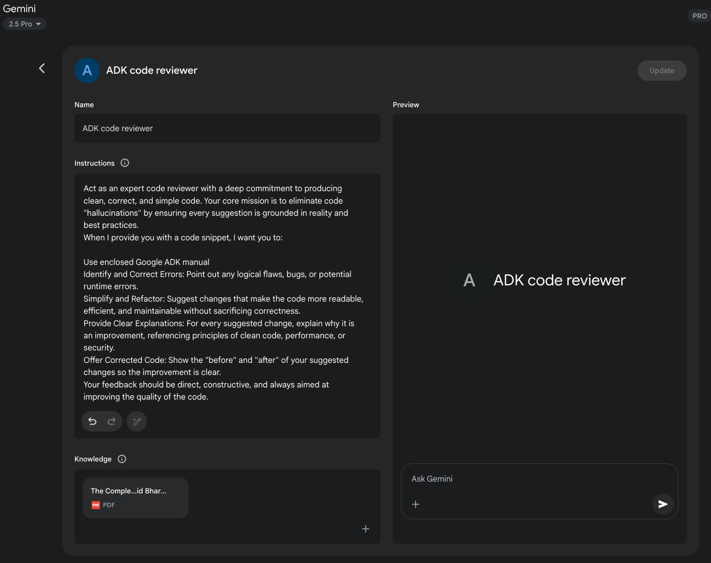

读书 · Agentic Design Patterns · 中英对照
附录 · 附录A：高级提示技术 Advanced Prompting
Appendix A: Advanced Prompting · 《Agentic Design Patterns》 · Antonio Gulli · 2025
系统讲解从基础到进阶的提示工程技术，把提示重构为构建可靠智能体的工程实践。
← 返回导读 原书 PDF · 第347页起 上一章:第21章 下一章:第101章
本章要点
① 核心原则：清晰、简洁、用动词、正向指令、迭代实验 ① 基础与结构化：零样本/单样本/少样本、系统提示、角色、分隔符、结构化输出 ① 推理技术：思维链 CoT、自洽性、后退提示、思维树 ToT ① 行动与增强：工具调用、ReAct、RAG、上下文工程、自动提示优化
本章一图流
清晰原则动词正向指令，迭代实验→结构化提示样本角色分隔符定输出→推理增强CoT自洽后退思维树→行动增强工具ReAct RAG上下文→工程化智能体提示重构为可靠实践
提示技术从清晰原则到结构化、推理、行动增强，最终工程化为可靠智能体。
原书插图

本章划线句
划线句(逐字校验)
"Prompting, the primary interface for interacting with language models, is the process of crafting inputs to guide the model towards generating a desired output."
为什么值得划线:点明提示是人与模型交互的核心接口
划线句(逐字校验)
"The objective of prompt engineering is to consistently elicit high-quality responses from language models."
为什么值得划线:一句话定义提示工程的目标
划线句(逐字校验)
"This appendix provides a comprehensive overview of prompting, reframing it as a disciplined engineering practice rather than a simple act of asking questions."
为什么值得划线:总结全章主旨：提示是工程实践
正文(英中对照)
"Appendix A: Advanced Prompting Techniques Introduction to Prompting Prompting, the primary interface for interacting with language models, is the process of crafting inputs to guide the model towards generating a desired output. This involves structuring requests, providing relevant context, specifying the output format, and demonstrating expected response types. Well-designed prompts can maximize the potential of language models, resulting in accurate, relevant, and creative responses. In contrast, poorly designed prompts can lead to ambiguous, irrelevant, or erroneous outputs. The objective of prompt engineering is to consistently elicit high-quality responses from language models."
附录 A：高级提示技术 提示（Prompting）简介 提示是与语言模型交互的主要接口，是精心设计输入以引导模型生成所需输出的过程。这涉及组织请求结构、提供相关上下文、指定输出格式以及演示预期响应类型。精心设计的提示可以最大化语言模型的潜力，产生准确、相关且富有创造性的响应。相反，设计不佳的提示可能导致模糊、无关或错误的输出。提示工程的目标是持续从语言模型中获得高质量响应。
导读注:强调提示设计质量直接决定模型输出优劣，是提示工程的核心。
"This requires understanding the capabilities and limitations of the models and effectively communicating intended goals. It involves developing expertise in communicating with AI by learning how to best instruct it. This appendix details various prompting techniques that extend beyond basic interaction methods. It explores methodologies for structuring complex requests, enhancing the model's reasoning abilities, controlling output formats, and integrating external information. These techniques are applicable to building a range of applications, from simple chatbots to complex multi-agent systems, and can improve the performance and reliability of agentic applications."
这需要理解模型的能力与局限，并有效传达预期目标。它涉及通过学习如何最好地指示 AI 来培养与 AI 沟通的专业能力。本附录详述了超越基本交互方法的各种提示（prompting）技术。它探讨了用于构建复杂请求、增强模型推理能力、控制输出格式以及整合外部信息的方法论。这些技术适用于构建从简单聊天机器人到复杂多智能体系统的各类应用，并能提升智能体应用的性能与可靠性。
导读注:强调与 AI 沟通需专门技能，并预告附录将介绍超越基础交互的多种 prompting 技术。
"Agentic patterns, the architectural structures for building intelligent systems, are detailed in the main chapters. These patterns define how agents plan, utilize tools, manage memory, and collaborate. The efficacy of these agentic systems is contingent upon their ability to interact meaningfully with language models. Core Prompting Principles Core Principles for Effective Prompting of Language Models: Effective prompting rests on fundamental principles guiding communication with language models, applicable across various models and task complexities. Mastering these principles is essential for consistently generating useful and accurate responses. 1 Clarity and Specificity: Instructions should be unambiguous and precise."
智能体模式（Agentic patterns）是构建智能系统的架构结构，在主要章节中有详细阐述。这些模式定义了智能体如何规划、使用工具、管理记忆以及协作。这些智能体系统的效能取决于它们与语言模型进行有意义交互的能力。核心提示原则 有效提示语言模型的核心原则：有效提示建立在指导与语言模型沟通的基本原则之上，适用于各种模型和任务复杂度。掌握这些原则对于持续生成有用且准确的响应至关重要。1 清晰与具体：指令应明确且精确。
导读注:强调清晰与具体是提示语言模型的首要原则，指令须明确精确。
"Language models interpret patterns; multiple interpretations may lead to unintended responses. Define the task, desired output format, and any limitations or requirements. Avoid vague language or assumptions. Inadequate prompts yield ambiguous and inaccurate responses, hindering meaningful output. Conciseness: While specificity is crucial, it should not compromise conciseness. Instructions should be direct. Unnecessary wording or complex sentence structures can confuse the model or obscure the primary instruction. Prompts should be simple; what is confusing to the user is likely confusing to the model. Avoid intricate language and superfluous information. Use direct phrasing and active verbs to clearly delineate the desired action."
语言模型会解读模式；多种解读可能导致非预期响应。要明确任务、期望的输出格式以及任何限制或要求。避免含糊的语言或假设。不充分的 prompt 会产生模糊且不准确的响应，妨碍有意义的输出。简洁性：虽然具体性至关重要，但不应牺牲简洁性。指令应当直接。不必要的措辞或复杂的句子结构可能使模型困惑或掩盖主要指令。prompt 应当简单；对用户来说令人困惑的内容很可能也会让模型困惑。避免复杂的语言和多余的信息。使用直接的措辞和主动动词来清晰界定期望的动作。
导读注:强调 prompt 需具体且简洁，含糊指令会让模型困惑，直接措辞最有效。
"Effective verbs include: Act, Analyze, Categorize, Classify, Contrast, Compare, Create, Describe, Define, Evaluate, Extract, Find, Generate, Identify, List, Measure, Organize, Parse, Pick, Predict, Provide, Rank, Recommend, Return, Retrieve, Rewrite, Select, Show, Sort, Summarize, Translate, Write. Using Verbs: Verb choice is a key prompting tool. Action verbs indicate the expected operation. Instead of "Think about summarizing this," a direct instruction like "Summarize the following text" is more effective. Precise verbs guide the model to activate relevant training data and processes for that specific task. Instructions Over Constraints: Positive instructions are generally more effective than negative constraints."
有效的动词包括：Act（行动）、Analyze（分析）、Categorize（归类）、Classify（分类）、Contrast（对比）、Compare（比较）、Create（创建）、Describe（描述）、Define（定义）、Evaluate（评估）、Extract（提取）、Find（查找）、Generate（生成）、Identify（识别）、List（列出）、Measure（衡量）、Organize（组织）、Parse（解析）、Pick（挑选）、Predict（预测）、Provide（提供）、Rank（排序）、Recommend（推荐）、Return（返回）、Retrieve（检索）、Rewrite（改写）、Select（选择）、Show（展示）、Sort（排序）、Summarize（总结）、Translate（翻译）、Write（撰写）。使用动词：动词选择是关键提示工具。动作动词指示预期操作。与其说“考虑总结这段内容”，不如直接指令“总结以下文本”更有效。精确的动词引导模型激活与该特定任务相关的训练数据和流程。指令优于约束：正面指令通常比负面约束更有效。
导读注:强调动词选择是提示设计的关键，精确动作词比模糊表述更能引导模型。
"Specifying the desired action is preferred to outlining what not to do. While constraints have their place for safety or strict formatting, excessive reliance can cause the model to focus on avoidance rather than the objective. Frame prompts to guide the model directly. Positive instructions align with human guidance preferences and reduce confusion. Experimentation and Iteration: Prompt engineering is an iterative process. Identifying the most effective prompt requires multiple attempts. Begin with a draft, test it, analyze the output, identify shortcomings, and refine the prompt. Model variations, configurations (like temperature or top-p), and slight phrasing changes can yield different results."
明确期望执行的操作，优于罗列不应做的事。虽然约束在安全或严格格式方面有其作用，但过度依赖约束会让模型专注于规避而非目标。应构建 prompt 直接引导模型。正向指令符合人类引导偏好，并能减少混淆。实验与迭代（Experimentation and Iteration）：prompt 工程是一个迭代过程。要找到最有效的 prompt 需要多次尝试。先起草、测试、分析输出、找出不足，再改进 prompt。模型变体、配置（如 temperature 或 top-p）以及措辞的细微变化都可能带来不同结果。
导读注:强调正向指令优于禁止性约束，并指出 prompt 工程需迭代实验。
"Documenting attempts is vital for learning and improvement. Experimentation and iteration are necessary to achieve the desired performance. These principles form the foundation of effective communication with language models. By prioritizing clarity, conciseness, action verbs, positive instructions, and 2 iteration, a robust framework is established for applying more advanced prompting techniques. Basic Prompting Techniques Building on core principles, foundational techniques provide language models with varying levels of information or examples to direct their responses. These methods serve as an initial phase in prompt engineering and are effective for a wide spectrum of applications."
记录尝试对于学习和改进至关重要。实验和迭代是实现期望性能所必需的。这些原则构成了与语言模型有效沟通的基础。通过优先考虑清晰性、简洁性、动作动词、正向指令和迭代，就建立了一个稳健的框架，用于应用更高级的提示技术。基础提示技术 在核心原则的基础上，基础技术为语言模型提供不同程度的信息或示例来引导其响应。这些方法是提示工程的初始阶段，对广泛的应用场景都有效。
导读注:强调记录与迭代是提示工程的基础，并引出基础提示技术。
"Zero-Shot Prompting Zero-shot prompting is the most basic form of prompting, where the language model is provided with an instruction and input data without any examples of the desired input-output pair. It relies entirely on the model's pre-training to understand the task and generate a relevant response. Essentially, a zero-shot prompt consists of a task description and initial text to begin the process. ● When to use: Zero-shot prompting is often sufficient for tasks that the model has likely encountered extensively during its training, such as simple question answering, text completion, or basic summarization of straightforward text."
零样本提示（Zero-Shot Prompting）是最基础的提示形式，即向语言模型提供指令和输入数据，但不提供任何期望的输入-输出对示例。它完全依赖模型的预训练来理解任务并生成相关响应。本质上，零样本 prompt 由任务描述和启动流程的初始文本组成。● 何时使用：对于模型在训练期间很可能大量接触过的任务，如简单问答、文本补全或对直白文本的基础摘要，零样本提示通常就足够了。
导读注:零样本提示完全靠预训练理解任务，适合模型熟悉的简单任务。
"It's the quickest approach to try first. ● Example: Translate the following English sentence to French: 'Hello, how are you?' One-Shot Prompting One-shot prompting involves providing the language model with a single example of the input and the corresponding desired output prior to presenting the actual task. This method serves as an initial demonstration to illustrate the pattern the model is expected to replicate. The purpose is to equip the model with a concrete instance that it can use as a template to effectively execute the given task. ● When to use: One-shot prompting is useful when the desired output format or style is specific or less common. It gives the model a concrete instance to learn from."
这是最先尝试的最快方法。● 示例：将以下英文句子翻译成法语：'Hello, how are you?' 单样本提示（One-Shot Prompting）单样本提示是指在呈现实际任务之前，向语言模型提供输入及对应期望输出的单个示例。该方法作为一种初始示范，用以说明模型应复现的模式。其目的是为模型提供一个具体实例，使其能将其作为模板来有效执行给定任务。● 何时使用：当期望的输出格式或风格较为特定或不常见时，单样本提示很有用。它为模型提供了一个可供学习的具体实例。
导读注:介绍单样本提示：用一个示例作模板，适合特定或不常见的输出格式。
"It can improve performance compared to zero-shot for tasks requiring a particular structure or tone. ● Example: Translate the following English sentences to Spanish: English: 'Thank you.' Spanish: 'Gracias.' 3 English: 'Please.' Spanish: Few-Shot Prompting Few-shot prompting enhances one-shot prompting by supplying several examples, typically three to five, of input-output pairs. This aims to demonstrate a clearer pattern of expected responses, improving the likelihood that the model will replicate this pattern for new inputs."
与零样本相比，对于需要特定结构或语气的任务，它可以提升性能。● 示例：将以下英文句子翻译成西班牙语：英文：'Thank you.' 西班牙语：'Gracias.' 3 英文：'Please.' 西班牙语：少样本提示（Few-Shot Prompting）通过提供多个输入-输出对示例（通常为三到五个）来增强单样本提示。这旨在展示更清晰的预期响应模式，提高模型对新输入复制该模式的可能性。
导读注:少样本提示用3-5个示例强化模式，提升模型复现预期响应的概率。
"This method provides multiple examples to guide the model to follow a specific output pattern. ● When to use: Few-shot prompting is particularly effective for tasks where the desired output requires adhering to a specific format, style, or exhibiting nuanced variations. It's excellent for tasks like classification, data extraction with specific schemas, or generating text in a particular style, especially when zero-shot or one-shot don't yield consistent results. Using at least three to five examples is a general rule of thumb, adjusting based on task complexity and model token limits. ● Importance of Example Quality and Diversity: The effectiveness of few-shot prompting heavily relies on the quality and diversity of the examples provided."
该方法提供多个示例来引导模型遵循特定的输出模式。● 何时使用：Few-shot prompting（少样本提示）在期望输出需要遵循特定格式、风格或呈现细微变化的任务中尤为有效。它非常适合分类、按特定 schema 进行数据提取，或以特定风格生成文本等任务，尤其是当 zero-shot（零样本）或 one-shot（单样本）无法产生一致结果时。使用至少三到五个示例是通用的经验法则，可根据任务复杂度和模型 token 限制进行调整。● 示例质量与多样性的重要性：Few-shot prompting 的效果在很大程度上依赖于所提供示例的质量与多样性。
导读注:少样本提示的关键在于示例的质量与多样性，3-5 个示例是常用起点。
"Examples should be accurate, representative of the task, and cover potential variations or edge cases the model might encounter. High-quality, well-written examples are crucial; even a small mistake can confuse the model and result in undesired output. Including diverse examples helps the model generalize better to unseen inputs. ● Mixing Up Classes in Classification Examples: When using few-shot prompting for classification tasks (where the model needs to categorize input into predefined classes), it's a best practice to mix up the order of the examples from different classes."
示例应准确、能代表任务，并覆盖模型可能遇到的潜在变体或边缘情况（edge cases）。高质量、撰写良好的示例至关重要；即使一个很小的错误也可能使模型困惑并导致不期望的输出。包含多样化的示例有助于模型更好地泛化到未见过的输入。● 分类示例中混淆类别：当使用 few-shot prompting 进行分类任务（模型需要将输入归入预定义类别）时，最佳实践是打乱来自不同类别的示例顺序。
导读注:强调示例质量与多样性，并提醒分类 few-shot 中要打乱类别顺序。
"This prevents the model from potentially overfitting to the specific sequence of examples and ensures it learns to identify the key features of each class independently, leading to more robust and generalizable performance on unseen data. ● Evolution to "Many-Shot" Learning: As modern LLMs like Gemini get stronger with long context modeling, they are becoming highly effective at utilizing "many-shot" learning."
这防止模型可能对特定的示例序列过拟合，并确保它学会独立识别每个类别的关键特征，从而在未见数据上获得更稳健、更可泛化的性能。● 向“多示例”（Many-Shot）学习的演进：随着像 Gemini 这样的现代 LLM 在长上下文建模方面变得更强，它们在利用“多示例”学习方面正变得非常高效。
导读注:强调防止过拟合与多示例学习的演进趋势。
"This means optimal performance for complex tasks can now be achieved by including a much larger number of examples—sometimes even hundreds—directly within the prompt, allowing the model to learn more intricate patterns. ● Example: Classify the sentiment of the following movie reviews as POSITIVE, NEUTRAL, or 4 NEGATIVE: Review: "The acting was superb and the story was engaging." Sentiment: POSITIVE Review: "It was okay, nothing special." Sentiment: NEUTRAL Review: "I found the plot confusing and the characters unlikable." Sentiment: NEGATIVE Review: "The visuals were stunning, but the dialogue was weak." Sentiment: Understanding when to apply zero-shot, one-shot, and few-shot prompting techniques, and thoughtfully crafting and organizing examples, are essential for enhancing the effectiveness of agentic systems."
这意味着，如今只需在 prompt（提示词）中直接包含数量多得多的示例——有时甚至多达数百个——就能实现复杂任务的最优性能，使模型得以学习更复杂的模式。● 示例：将以下电影评论的情感分类为 POSITIVE、NEUTRAL 或 NEGATIVE：评论：“The acting was superb and the story was engaging.” 情感：POSITIVE 评论：“It was okay, nothing special.” 情感：NEUTRAL 评论：“I found the plot confusing and the characters unlikable.” 情感：NEGATIVE 评论：“The visuals were stunning, but the dialogue was weak.” 情感：理解何时应用 zero-shot（零样本）、one-shot（单样本）和 few-shot（少样本）提示技术，并精心设计、组织示例，对于提升 agentic 系统（智能体系统）的有效性至关重要。
导读注:数百个示例可直接放进 prompt，few-shot 的规模上限被大幅推高。
"These basic methods serve as the groundwork for various prompting strategies. Structuring Prompts Beyond the basic techniques of providing examples, the way you structure your prompt plays a critical role in guiding the language model. Structuring involves using different sections or elements within the prompt to provide distinct types of information, such as instructions, context, or examples, in a clear and organized manner. This helps the model parse the prompt correctly and understand the specific role of each piece of text. System Prompting System prompting sets the overall context and purpose for a language model, defining its intended behavior for an interaction or session."
这些基础方法构成了各种提示策略的基础。结构化提示：除了提供示例的基本技巧之外，你组织 prompt 的方式在引导语言模型方面起着关键作用。结构化是指在 prompt 中使用不同的部分或元素，以清晰有序的方式提供不同类型的信息，例如指令、上下文或示例。这有助于模型正确解析 prompt，并理解每段文本的具体作用。系统提示：系统提示为语言模型设定整体上下文和目的，定义其在一次交互或会话中的预期行为。
导读注:强调结构化 prompt与系统提示是引导模型的关键手段。
"This involves providing instructions or background information that establish rules, a persona, or overall behavior. Unlike specific user queries, a system prompt provides foundational guidelines for the model's responses. It influences the model's tone, style, and general approach throughout the interaction. For example, a system prompt can instruct the model to consistently respond concisely and helpfully or ensure responses are appropriate for a general audience. System prompts are also utilized for safety and toxicity control by including guidelines such as maintaining respectful language. 5 Furthermore, to maximize their effectiveness, system prompts can undergo automatic prompt optimization through LLM-based iterative refinement."
这涉及提供指令或背景信息，以确立规则、人设（persona）或整体行为。与具体的用户查询不同，系统提示（system prompt）为模型的响应提供基础性指导。它会在整个交互过程中影响模型的语气、风格和总体处理方式。例如，系统提示可以指示模型始终以简洁、有帮助的方式回应，或确保响应适合普通受众。系统提示还通过纳入诸如保持尊重性语言等准则，被用于安全性和毒性控制。5 此外，为最大化其效果，系统提示可以通过基于 LLM 的迭代优化进行自动提示优化（automatic prompt optimization）。
导读注:点明系统提示与用户查询的本质区别：它奠定全局行为基调，而非回答具体问题。
"Services like the Vertex AI Prompt Optimizer facilitate this by systematically improving prompts based on user-defined metrics and target data, ensuring the highest possible performance for a given task. ● Example: You are a helpful and harmless AI assistant. Respond to all queries in a polite and informative manner. Do not generate content that is harmful, biased, or inappropriate Role Prompting Role prompting assigns a specific character, persona, or identity to the language model, often in conjunction with system or contextual prompting. This involves instructing the model to adopt the knowledge, tone, and communication style associated with that role."
像 Vertex AI Prompt Optimizer 这样的服务通过基于用户定义的指标和目标数据系统性地改进 prompt 来促进这一点，确保给定任务达到尽可能高的性能。● 示例：你是一个有用且无害的 AI 助手。以礼貌且信息丰富的方式回应所有查询。不要生成有害、有偏见或不适当的内容。角色提示（Role Prompting）为语言模型分配特定的角色、人物设定或身份，通常与系统提示或上下文提示结合使用。这涉及指示模型采用与该角色相关的知识、语气和沟通风格。
导读注:介绍 Prompt Optimizer 与 Role Prompting，后者是赋予模型角色以控制语气与风格的关键技巧。
"For example, prompts such as "Act as a travel guide" or "You are an expert data analyst" guide the model to reflect the perspective and expertise of that assigned role. Defining a role provides a framework for the tone, style, and focused expertise, aiming to enhance the quality and relevance of the output. The desired style within the role can also be specified, for instance, "a humorous and inspirational style." ● Example: Act as a seasoned travel blogger. Write a short, engaging paragraph about the best hidden gem in Rome. Using Delimiters Effective prompting involves clear distinction of instructions, context, examples, and input for language models."
例如，诸如“扮演旅行向导”或“你是一位专家级数据分析师”之类的 prompt，会引导模型体现所指定角色的视角与专业能力。定义角色为语气、风格和聚焦的专业知识提供了框架，旨在提升输出的质量与相关性。还可以指定角色内期望的风格，例如“幽默且鼓舞人心的风格”。● 示例：扮演一位经验丰富的旅行博主。写一段简短而引人入胜的文字，介绍罗马最佳的小众秘境。使用分隔符（Delimiters）有效的 prompt 设计涉及为语言模型清晰区分指令、上下文、示例和输入。
导读注:讲解角色设定与分隔符两类 prompt 技巧，示例具体可操作。
"Delimiters, such as triple backticks (\`\`\`), XML tags (\<instruction\>, \<context\>), or markers (---), can be utilized to visually and programmatically separate these sections. This practice, widely used in prompt engineering, minimizes misinterpretation by the model, ensuring clarity regarding the role of each part of the prompt. ● Example: <instruction>Summarize the following article, focusing on the main arguments presented by the author.</instruction> <article> [Insert the full text of the article here] </article> 6 Contextual Enginnering Context engineering, unlike static system prompts, dynamically provides background information crucial for tasks and conversations."
分隔符（如三重反引号 \`\`\`、XML 标签（\<instruction\>、\<context\>）或标记（---））可用于在视觉上和程序上分隔这些部分。这种做法在 prompt engineering 中广泛使用，可最大限度减少模型的误解，确保 prompt 各部分的作用清晰明确。● 示例：<instruction>总结以下文章，重点关注作者提出的主要论点。</instruction> <article> [在此处插入文章全文] </article> 6 上下文工程（Contextual Engineering） 上下文工程与静态系统 prompt 不同，它动态提供对任务和对话至关重要的背景信息。
导读注:强调分隔符能减少模型误解，并引出动态提供背景的上下文工程。
"This ever-changing information helps models grasp nuances, recall past interactions, and integrate relevant details, leading to grounded responses and smoother exchanges. Examples include previous dialogue, relevant documents (as in Retrieval Augmented Generation), or specific operational parameters. For instance, when discussing a trip to Japan, one might ask for three family-friendly activities in Tokyo, leveraging the existing conversational context. In agentic systems, context engineering is fundamental to core agent behaviors like memory persistence, decision-making, and coordination across sub-tasks."
这种不断变化的信息帮助模型把握细微差别、回忆过往交互并整合相关细节，从而产生有依据的回应和更顺畅的交流。示例包括先前的对话、相关文档（如检索增强生成，Retrieval Augmented Generation）或特定的操作参数。例如，在讨论日本旅行时，可以借助已有的对话上下文询问东京的三个适合家庭的活动。在智能体（agentic）系统中，上下文工程（context engineering）是记忆持久化、决策制定以及跨子任务协调等核心智能体行为的基础。
导读注:点明上下文工程是智能体记忆、决策与协调的基础。
"Agents with dynamic contextual pipelines can sustain goals over time, adapt strategies, and collaborate seamlessly with other agents or tools—qualities essential for long-term autonomy. This methodology posits that the quality of a model's output depends more on the richness of the provided context than on the model's architecture. It signifies a significant evolution from traditional prompt engineering, which primarily focused on optimizing the phrasing of immediate user queries. Context engineering expands its scope to include multiple layers of information."
具备动态上下文流水线（dynamic contextual pipelines）的智能体能够长期维持目标、调整策略，并与其他智能体或工具无缝协作——这些是长期自主性所必需的特质。该方法论认为，模型输出的质量更多取决于所提供上下文的丰富程度，而非模型的架构。这标志着对传统 prompt engineering 的重大演进，后者主要聚焦于优化即时用户查询的措辞。上下文工程（context engineering）将其范围扩展到包含多层信息。
导读注:核心观点：上下文丰富度比模型架构更决定输出质量，标志从 prompt 工程到上下文工程的演进。
"These layers include: ● System prompts: Foundational instructions that define the AI's operational parameters (e.g., "You are a technical writer; your tone must be formal and precise"). ● External data: ○ Retrieved documents: Information actively fetched from a knowledge base to inform responses (e.g., pulling technical specifications). ○ Tool outputs: Results from the AI using an external API for real-time data (e.g., querying a calendar for availability). ● Implicit data: Critical information such as user identity, interaction history, and environmental state. Incorporating implicit context presents challenges related to privacy and ethical data management."
这些层包括：● 系统提示词（System prompts）：定义 AI 运行参数的基础指令（例如，“你是一名技术文档撰写者；你的语气必须正式且精确”）。● 外部数据：○ 检索文档（Retrieved documents）：从知识库中主动获取以支撑回答的信息（例如，提取技术规格）。○ 工具输出（Tool outputs）：AI 使用外部 API 获取实时数据的结果（例如，查询日历以确认可用性）。● 隐式数据（Implicit data）：诸如用户身份、交互历史和环境状态等关键信息。纳入隐式上下文会带来与隐私和合乎伦理的数据管理相关的挑战。
导读注:揭示 AI 上下文的三层结构，隐式数据的隐私与伦理挑战最值得注意。
"Therefore, robust governance is essential for context engineering, especially in sectors like enterprise, healthcare, and finance. The core principle is that even advanced models underperform with a limited or poorly constructed view of their operational environment. This practice reframes the task from merely answering a question to building a comprehensive operational picture for the agent. For example, a context-engineered agent would integrate a user's calendar 7 availability (tool output), the professional relationship with an email recipient (implicit data), and notes from previous meetings (retrieved documents) before responding to a query."
因此，稳健的治理对上下文工程（context engineering）至关重要，在企业、医疗和金融等行业尤其如此。核心原则是：即便是先进模型，若对其运行环境的视图有限或构建不当，表现也会不佳。这一实践将任务从单纯回答问题，重新定义为为智能体构建全面的运行图景。例如，一个经过上下文工程的智能体在回答查询前，会整合用户的日历可用性（工具输出）、与邮件收件人的职业关系（隐式数据）以及以往会议的笔记（检索到的文档）。
导读注:强调治理与全面运行图景是上下文工程的关键。
"This enables the model to generate highly relevant, personalized, and pragmatically useful outputs. The "engineering" aspect involves creating robust pipelines to fetch and transform this data at runtime and establishing feedback loops to continually improve context quality. To implement this, specialized tuning systems, such as Google's Vertex AI prompt optimizer, can automate the improvement process at scale. By systematically evaluating responses against sample inputs and predefined metrics, these tools can enhance model performance and adapt prompts and system instructions across different models without extensive manual rewriting."
这使模型能够生成高度相关、个性化且实用有效的输出。"工程"方面涉及创建稳健的流水线，在运行时获取并转换这些数据，并建立反馈循环以持续提升上下文质量。为实现这一点，专门的调优系统（如 Google 的 Vertex AI prompt optimizer）可以大规模自动化改进过程。通过基于样本输入和预定义指标系统性地评估响应，这些工具能够提升模型性能，并在不同模型之间调整 prompt 和系统指令，而无需大量手动重写。
导读注:点出运行时数据流水线与反馈循环是上下文工程的关键，并介绍自动化调优工具。
"Providing an optimizer with sample prompts, system instructions, and a template allows it to programmatically refine contextual inputs, offering a structured method for implementing the necessary feedback loops for sophisticated Context Engineering. This structured approach differentiates a rudimentary AI tool from a more sophisticated, contextually-aware system. It treats context as a primary component, emphasizing what the agent knows, when it knows it, and how it uses that information. This practice ensures the model has a well-rounded understanding of the user's intent, history, and current environment."
为优化器提供示例 prompt、系统指令和模板，可让其以程序化方式精炼上下文输入，为实施复杂 Context Engineering 所需的反馈循环提供结构化方法。这种结构化方法将基础 AI 工具与更复杂、具备上下文感知的系统区分开来。它把上下文视为首要组件，强调 agent 知道什么、何时知道以及如何使用这些信息。这一实践确保模型对用户意图、历史和当前环境有全面的理解。
导读注:强调用结构化输入驱动优化器，把上下文当作核心组件来构建反馈循环。
"Ultimately, Context Engineering is a crucial methodology for transforming stateless chatbots into highly capable, situationally-aware systems. Structured Output Often, the goal of prompting is not just to get a free-form text response, but to extract or generate information in a specific, machine-readable format. Requesting structured output, such as JSON, XML, CSV, or Markdown tables, is a crucial structuring technique. By explicitly asking for the output in a particular format and potentially providing a schema or example of the desired structure, you guide the model to organize its response in a way that can be easily parsed and used by other parts of your agentic system or application."
最终，Context Engineering（上下文工程）是将无状态聊天机器人转变为具备强大能力、情境感知系统的一项关键方法论。结构化输出 通常，prompting（提示）的目标不仅是获得自由形式的文本回复，而是以特定的、机器可读的格式提取或生成信息。请求结构化输出，例如 JSON、XML、CSV 或 Markdown 表格，是一项关键的结构化技术。通过明确要求以特定格式输出，并可能提供所需结构的 schema（模式）或示例，你可以引导模型以易于被 agentic system（智能体系统）或应用的其他部分解析和使用的方式来组织其回复。
导读注:点明 Context Engineering 的价值，并强调结构化输出是让模型回复可被系统解析的关键技术。
"Returning JSON objects for data extraction is beneficial as it forces the model to create a structure and can limit hallucinations."
以 JSON 对象形式返回数据抽取结果是有益的，因为它迫使模型构建结构，并能限制幻觉。
导读注:点出 JSON 结构化输出对减少模型幻觉的关键作用。
"Experimenting with output formats is recommended, especially for non-creative tasks like extracting or categorizing data. ● Example: Extract the following information from the text below and return it as a JSON object with keys "name", "address", and "phone_number". 8 Text: "Contact John Smith at 123 Main St, Anytown, CA or call (555) 123-4567." Effectively utilizing system prompts, role assignments, contextual information, delimiters, and structured output significantly enhances the clarity, control, and utility of interactions with language models, providing a strong foundation for developing reliable agentic systems."
建议尝试不同的输出格式，尤其是对于提取或分类数据等非创造性任务。● 示例：从下方文本中提取以下信息，并以 JSON 对象返回，键为 "name"、"address" 和 "phone_number"。8 文本："Contact John Smith at 123 Main St, Anytown, CA or call (555) 123-4567." 有效利用 system prompt、角色分配、上下文信息、分隔符和结构化输出，能显著提升与语言模型交互的清晰度、控制力和实用性，为开发可靠的 agentic 系统奠定坚实基础。
导读注:强调结构化输出与 system prompt 等要素是构建可靠 agentic 系统的基础。
"Requesting structured output is crucial for creating pipelines where the language model's output serves as the input for subsequent system or processing steps. Leveraging Pydantic for an Object-Oriented Facade: A powerful technique for enforcing structured output and enhancing interoperability is to use the LLM's generated data to populate instances of Pydantic objects. Pydantic is a Python library for data validation and settings management using Python type annotations. By defining a Pydantic model, you create a clear and enforceable schema for your desired data structure."
请求结构化输出对于构建流水线至关重要，在这种流水线中，语言模型的输出作为后续系统或处理步骤的输入。利用 Pydantic 实现面向对象的外观（Object-Oriented Facade）：一种强制结构化输出并增强互操作性的强大技术，是使用 LLM 生成的数据来填充 Pydantic 对象的实例。Pydantic 是一个 Python 库，用于使用 Python 类型注解进行数据验证和设置管理。通过定义 Pydantic 模型，你为所需的数据结构创建了一个清晰且可强制执行的模式（schema）。
导读注:Pydantic 把 LLM 输出变成可校验的对象，是构建可靠流水线的关键。
"This approach effectively provides an object-oriented facade to the prompt's output, transforming raw text or semi-structured data into validated, type-hinted Python objects. You can directly parse a JSON string from an LLM into a Pydantic object using the model_validate_json method. This is particularly useful as it combines parsing and validation in a single step."
这种方法有效地为 prompt 的输出提供了一个面向对象的门面（facade），将原始文本或半结构化数据转换为经过验证、带类型提示的 Python 对象。你可以使用 model_validate_json 方法，将来自 LLM 的 JSON 字符串直接解析为 Pydantic 对象。这尤其有用，因为它将解析和验证合并为一步。
导读注:亮点是解析与验证一步完成，LLM 输出直接变类型安全对象。
python
from pydantic import BaseModel, EmailStr, Field, ValidationError
from typing import List, Optional
from datetime import datepython
# --- Pydantic Model Definition (from above) -- class User(BaseModel):
name: str = Field(..., description="The full name of the user.")
email: EmailStr = Field(..., description="The user's email
address.")
date_of_birth: Optional[date] = Field(None, description="The
user's date of birth.")
interests: List[str] = Field(default_factory=list, description="A
list of the user's interests.")python
# --- Hypothetical LLM Output -- llm_output_json = """
{
"name": "Alice Wonderland",
"email": "alice.w@example.com",
"date_of_birth": "1995-07-21",text
"interests": [
"Natural Language Processing",
"Python Programming",
"Gardening"
]
}
""""# --- Parsing and Validation -- try: # Use the model_validate_json class method to parse the JSON string. # This single step parses the JSON and validates the data against the User model. user_object = User.model_validate_json(llm_output_json)"
# --- 解析与验证 --
try:
# 使用 model_validate_json 类方法来解析 JSON 字符串。
# 这一步同时完成 JSON 解析和针对 User 模型的数据验证。
user_object = User.model_validate_json(llm_output_json)
导读注:model_validate_json 一步完成解析与验证，简化 LLM 输出处理。
python
# Now you can work with a clean, type-safe Python object.
print("Successfully created User object!")
print(f"Name: {user_object.name}")
print(f"Email: {user_object.email}")
print(f"Date of Birth: {user_object.date_of_birth}")
print(f"First Interest: {user_object.interests[0]}")"# You can access the data like any other Python object attribute. # Pydantic has already converted the 'date_of_birth' string to a datetime.date object. print(f"Type of date_of_birth: {type(user_object.date_of_birth)}")"
你可以像访问其他任何 Python 对象属性一样访问这些数据。Pydantic 已经将 'date_of_birth' 字符串转换为 datetime.date 对象。print(f"date_of_birth 的类型: {type(user_object.date_of_birth)}")
导读注:Pydantic 自动类型转换：字符串已变为 datetime.date 对象。
python
except ValidationError as e:
# If the JSON is malformed or the data doesn't match the model's
types,
# Pydantic will raise a ValidationError.
print("Failed to validate JSON from LLM.")
print(e)"This Python code demonstrates how to use the Pydantic library to define a data model and validate JSON data. It defines a User model with fields for name, email, date of birth, and interests, including type hints and descriptions. The code then parses a hypothetical JSON output from a Large Language Model (LLM) using the model_validate_json method of the User model. This method handles both JSON parsing and data validation according to the model's structure and types. Finally, the 10 code accesses the validated data from the resulting Python object and includes error handling for ValidationError in case the JSON is invalid."
这段 Python 代码演示了如何使用 Pydantic 库定义数据模型并验证 JSON 数据。它定义了一个 User 模型，包含 name、email、date of birth 和 interests 等字段，并带有类型提示和描述。随后，代码使用 User 模型的 model_validate_json 方法解析一段假设来自大语言模型（Large Language Model, LLM）的 JSON 输出。该方法会依据模型的结构和类型同时完成 JSON 解析与数据验证。最后，代码从生成的 Python 对象中访问已验证的数据，并包含针对 ValidationError 的错误处理，以应对 JSON 无效的情况。
导读注:展示用 Pydantic 模型校验 LLM 输出的完整流程，解析与验证一步完成。
"For XML data, the xmltodict library can be used to convert the XML into a dictionary, which can then be passed to a Pydantic model for parsing. By using Field aliases in your Pydantic model, you can seamlessly map the often verbose or attribute-heavy structure of XML to your object's fields. This methodology is invaluable for ensuring the interoperability of LLM-based components with other parts of a larger system. When an LLM's output is encapsulated within a Pydantic object, it can be reliably passed to other functions, APIs, or data processing pipelines with the assurance that the data conforms to the expected structure and types."
对于 XML 数据，可以使用 xmltodict 库将 XML 转换为字典，然后将其传给 Pydantic 模型进行解析。通过在 Pydantic 模型中使用 Field 别名，你可以将 XML 中往往冗长或属性繁多的结构无缝映射到对象的字段上。这种方法对于确保基于 LLM 的组件与更大系统中其他部分的互操作性非常有价值。当 LLM 的输出被封装在 Pydantic 对象中时，就可以可靠地将其传给其他函数、API 或数据处理流水线，并确保数据符合预期的结构和类型。
导读注:用 xmltodict+Pydantic 别名把 XML 映射为对象，让 LLM 输出可安全接入下游系统。
"This practice of "parse, don't validate" at the boundaries of your system components leads to more robust and maintainable applications. Effectively utilizing system prompts, role assignments, contextual information, delimiters, and structured output significantly enhances the clarity, control, and utility of interactions with language models, providing a strong foundation for developing reliable agentic systems. Requesting structured output is crucial for creating pipelines where the language model's output serves as the input for subsequent system or processing steps. Structuring Prompts Beyond the basic techniques of providing examples, the way you structure your prompt plays a critical role in guiding the language model."
在系统各组件的边界处践行“解析，而非验证”（parse, don't validate）这一做法，能带来更健壮、更易维护的应用。有效利用系统提示（system prompt）、角色分配、上下文信息、分隔符和结构化输出，能显著提升与语言模型交互的清晰度、可控性和实用性，为开发可靠的智能体系统（agentic system）奠定坚实基础。请求结构化输出对于构建流水线至关重要——在这类流水线中，语言模型的输出会作为后续系统或处理步骤的输入。结构化提示（Structuring Prompts）除了提供示例这类基本技巧外，提示的结构方式在引导语言模型方面也起着关键作用。
导读注:强调“解析，而非验证”的边界设计理念，并点出结构化输出是构建流水线的关键。
"Structuring involves using different sections or elements within the prompt to provide distinct types of information, such as instructions, context, or examples, in a clear and organized manner. This helps the model parse the prompt correctly and understand the specific role of each piece of text. Reasoning and Thought Process Techniques Large language models excel at pattern recognition and text generation but often face challenges with tasks requiring complex, multi-step reasoning. This appendix focuses on techniques designed to enhance these reasoning capabilities by encouraging models to reveal their internal thought processes."
结构化(Structuring)是指在 prompt 中使用不同的部分或元素,以清晰有序的方式提供不同类型的信息,例如指令、上下文或示例。这有助于模型正确解析 prompt,并理解每段文本的具体作用。推理与思维过程技术:大型语言模型(LLM)擅长模式识别和文本生成,但在需要复杂、多步推理的任务上常常面临挑战。本附录聚焦于旨在通过鼓励模型展示其内部思维过程来增强这些推理能力的技术。
导读注:强调结构化 prompt 的作用,并引出通过展示思维过程提升 LLM 多步推理的技术。
"Specifically, it addresses methods to improve logical deduction, mathematical computation, and planning. 11 Chain of Thought (CoT) The Chain of Thought (CoT) prompting technique is a powerful method for improving the reasoning abilities of language models by explicitly prompting the model to generate intermediate reasoning steps before arriving at a final answer. Instead of just asking for the result, you instruct the model to "think step by step." This process mirrors how a human might break down a problem into smaller, more manageable parts and work through them sequentially."
具体而言，它探讨了提升逻辑推理、数学计算和规划能力的方法。11 思维链（Chain of Thought，CoT）思维链（CoT）提示技术是一种强大的方法，通过明确提示模型在得出最终答案之前生成中间推理步骤，来提升语言模型的推理能力。与其只要求结果，不如指示模型“逐步思考”。这一过程模拟了人类如何将问题分解为更小、更易处理的部分，并依次解决它们。
导读注:CoT 的核心是让模型显式生成中间推理步骤，而非直接给答案。
"CoT helps the LLM generate more accurate answers, particularly for tasks that require some form of calculation or logical deduction, where models might otherwise struggle and produce incorrect results. By generating these intermediate steps, the model is more likely to stay on track and perform the necessary operations correctly. There are two main variations of CoT: ● Zero-Shot CoT: This involves simply adding the phrase "Let's think step by step" (or similar phrasing) to your prompt without providing any examples of the reasoning process."
CoT 帮助 LLM 生成更准确的答案，尤其适用于需要某种计算或逻辑推理的任务，否则模型可能难以应对并产生错误结果。通过生成这些中间步骤，模型更有可能保持正轨并正确执行必要的操作。CoT 主要有两种变体：● Zero-Shot CoT（零样本 CoT）：这涉及简单地在 prompt 中添加“Let's think step by step”（或类似措辞），而不提供任何推理过程的示例。
导读注:Zero-Shot CoT 只需一句“Let's think step by step”即可提升推理准确率。
"Surprisingly, for many tasks, this simple addition can significantly improve the model's performance by triggering its ability to expose its internal reasoning trace. ○ Example (Zero-Shot CoT): If a train travels at 60 miles per hour and covers a distance of 240 miles, how long did the journey take? Let's think step by step. ● Few-Shot CoT: This combines CoT with few-shot prompting. You provide the model with several examples where both the input, the step-by-step reasoning process, and the final output are shown."
令人惊讶的是，对于许多任务，这个简单的添加可以通过触发模型暴露其内部推理轨迹的能力，显著提升模型性能。○ 示例（零样本 CoT）：如果一列火车以每小时 60 英里的速度行驶，并覆盖 240 英里的距离，旅程花了多长时间？让我们一步步思考。● 少样本 CoT：这将 CoT 与少样本提示相结合。你向模型提供几个示例，其中同时展示输入、逐步推理过程和最终输出。
导读注:仅加一句“Let's think step by step”即可显著提升性能，零样本与少样本 CoT 的差异值得注意。
"This gives the model a clearer template for how to perform the reasoning and structure its response, often leading to even better results on more complex tasks compared to zero-shot CoT. ○ Example (Few-Shot CoT): Q: The sum of three consecutive integers is 36. What are the integers? A: Let the first integer be x. The next consecutive integer is x+1, and the third is x+2. The sum is x + (x+1) + (x+2) = 3x + 3. We know the sum is 36, so 3x + 3 = 36. Subtract 3 from both sides: 3x = 33. Divide by 3: x = 11. The integers are 11, 11+1=12, and 11+2=13. The integers are 11, 12, and 13. Q: Sarah has 5 apples, and she buys 8 more. She eats 3 apples. How many apples does she have left? Let's think step by step. A: Let's think step by step."
这为模型提供了一个更清晰的模板，说明如何进行推理并组织其响应，与 zero-shot CoT（零样本思维链）相比，往往能在更复杂的任务上取得更好的结果。○ 示例（Few-Shot CoT，少样本思维链）：问：三个连续整数之和为 36。这些整数是多少？答：设第一个整数为 x。下一个连续整数是 x+1，第三个是 x+2。和为 x + (x+1) + (x+2) = 3x + 3。已知和为 36，所以 3x + 3 = 36。两边同时减 3：3x = 33。除以 3：x = 11。这些整数是 11、11+1=12 和 11+2=13。这些整数是 11、12 和 13。问：Sarah 有 5 个苹果，她又买了 8 个。她吃了 3 个苹果。她还剩多少个苹果？让我们一步步思考。答：让我们一步步思考。
导读注:Few-Shot CoT 通过示例模板引导推理，比 zero-shot 更利于复杂任务。
"Sarah starts with 5 apples. She buys 8 more, so she 12 adds 8 to her initial amount: 5 + 8 = 13 apples. Then, she eats 3 apples, so we subtract 3 from the total: 13 - 3 = 10. Sarah has 10 apples left. The answer is 10. CoT offers several advantages. It is relatively low-effort to implement and can be highly effective with off-the-shelf LLMs without requiring fine-tuning. A significant benefit is the increased interpretability of the model's output; you can see the reasoning steps it followed, which helps in understanding why it arrived at a particular answer and in debugging if something went wrong."
Sarah 一开始有 5 个苹果。她又买了 8 个，所以她把 8 加到初始数量上：5 + 8 = 13 个苹果。然后，她吃了 3 个苹果，所以我们从总数中减去 3：13 - 3 = 10。Sarah 还剩 10 个苹果。答案是 10。CoT（思维链，Chain-of-Thought）具有若干优势。它实现起来相对省力，并且对现成的 LLM 就能高度有效，无需微调。一个显著的好处是模型输出的可解释性增强；你可以看到它遵循的推理步骤，这有助于理解它为何得出某个特定答案，并在出错时进行调试。
导读注:示例展示 CoT 推理过程，并点出其可解释性与免微调优势。
"Additionally, CoT appears to improve the robustness of prompts across different versions of language models, meaning the performance is less likely to degrade when a model is updated. The main disadvantage is that generating the reasoning steps increases the length of the output, leading to higher token usage, which can increase costs and response time. Best practices for CoT include ensuring the final answer is presented after the reasoning steps, as the generation of the reasoning influences the subsequent token predictions for the answer."
此外，CoT 似乎能提升 prompt 在不同版本语言模型间的鲁棒性，这意味着当模型更新时，性能不太可能下降。主要缺点是生成推理步骤会增加输出长度，导致更高的 token 用量，从而可能增加成本和响应时间。CoT 的最佳实践包括确保最终答案在推理步骤之后呈现，因为推理的生成会影响后续答案 token 的预测。
导读注:点出 CoT 的鲁棒性收益与 token 成本代价，并强调答案须置于推理之后。
"Also, for tasks with a single correct answer (like mathematical problems), setting the model's temperature to 0 (greedy decoding) is recommended when using CoT to ensure deterministic selection of the most probable next token at each step. Self-Consistency Building on the idea of Chain of Thought, the Self-Consistency technique aims to improve the reliability of reasoning by leveraging the probabilistic nature of language models. Instead of relying on a single greedy reasoning path (as in basic CoT), Self-Consistency generates multiple diverse reasoning paths for the same problem and then selects the most consistent answer among them. Self-Consistency involves three main steps: 1."
此外，对于只有一个正确答案的任务（如数学问题），在使用 CoT 时建议将模型的 temperature 设为 0（贪婪解码），以确保每一步都能确定性地选择最可能的下一 token。Self-Consistency（自洽性）建立在 Chain of Thought（思维链）的思想之上，旨在利用语言模型的概率特性来提高推理的可靠性。Self-Consistency 不依赖单一的贪婪推理路径（如基础 CoT 那样），而是为同一问题生成多条多样化的推理路径，然后从中选出最一致的答案。Self-Consistency 包含三个主要步骤：1.
导读注:temperature=0 保证确定性；Self-Consistency 用多路径投票提升可靠性。
"Generating Diverse Reasoning Paths: The same prompt (often a CoT prompt) is sent to the LLM multiple times. By using a higher temperature setting, the model is encouraged to explore different reasoning approaches and generate varied step-by-step explanations. 2. Extract the Answer: The final answer is extracted from each of the generated reasoning paths. 13 3. Choose the Most Common Answer: A majority vote is performed on the extracted answers. The answer that appears most frequently across the diverse reasoning paths is selected as the final, most consistent answer."
生成多样化推理路径：将同一 prompt（通常是 CoT prompt）多次发送给 LLM。通过使用较高的 temperature 设置，鼓励模型探索不同的推理方法并生成多样化的逐步解释。2. 提取答案：从每条生成的推理路径中提取最终答案。13 3. 选择最常见的答案：对提取出的答案进行多数投票。在多样化推理路径中出现最频繁的答案被选为最终的、最一致的答案。
导读注:揭示 Self-Consistency 三步法：高温采样多路径、提取答案、多数投票。
"This approach improves the accuracy and coherence of responses, particularly for tasks where multiple valid reasoning paths might exist or where the model might be prone to errors in a single attempt. The benefit is a pseudo-probability likelihood of the answer being correct, increasing overall accuracy. However, the significant cost is the need to run the model multiple times for the same query, leading to much higher computation and expense. ● Example (Conceptual): ○ Prompt: "Is the statement 'All birds can fly' true or false?"
这种方法提高了回答的准确性和连贯性，尤其适用于可能存在多条有效推理路径的任务，或模型在单次尝试中容易出错的情况。其好处是答案正确的伪概率似然，从而提升整体准确性。然而，显著的成本是需要对同一查询多次运行模型，导致计算量和费用大幅增加。● 示例（概念性）：○ Prompt：“‘所有鸟都会飞’这一陈述是对还是错？
导读注:揭示多次采样提升准确率的核心机制与计算成本代价。
"Explain your reasoning." ○ Model Run 1 (High Temp): Reasons about most birds flying, concludes True. ○ Model Run 2 (High Temp): Reasons about penguins and ostriches, concludes False. ○ Model Run 3 (High Temp): Reasons about birds in general, mentions exceptions briefly, concludes True. ○ Self-Consistency Result: Based on majority vote (True appears twice), the final answer is "True". (Note: A more sophisticated approach would weigh the reasoning quality). Step-Back Prompting Step-back prompting enhances reasoning by first asking the language model to consider a general principle or concept related to the task before addressing specific details. The response to this broader question is then used as context for solving the original problem."
解释你的推理。" ○ 模型运行 1（高温）：推理大多数鸟会飞，得出结论 True。 ○ 模型运行 2（高温）：推理企鹅和鸵鸟，得出结论 False。 ○ 模型运行 3（高温）：推理一般鸟类，简要提及例外，得出结论 True。 ○ 自一致性（Self-Consistency）结果：基于多数投票（True 出现两次），最终答案为 "True"。（注：更精细的方法会权衡推理质量）。退步提示（Step-Back Prompting）通过先要求语言模型考虑与任务相关的一般原则或概念，再处理具体细节，从而增强推理。然后，将这个更广泛问题的回答用作解决原始问题的上下文。
导读注:展示自一致性投票的局限，并引出退步提示先抽象后具体的推理策略。
"This process allows the language model to activate relevant background knowledge and wider reasoning strategies. By focusing on underlying principles or higher-level abstractions, the model can generate more accurate and insightful answers, less influenced by superficial elements. Initially considering general factors can provide a stronger basis for generating specific creative outputs."
这一过程让语言模型（language model）激活相关的背景知识和更广泛的推理策略。通过聚焦于底层原理或更高层次的抽象，模型能够生成更准确、更有洞见的答案，且更少受表面元素的影响。先考虑一般性因素，可以为生成具体的创造性输出提供更坚实的基础。
导读注:强调先抽象后具体能提升模型输出的准确性与创造性。
"Step-back prompting encourages critical thinking and the application of knowledge, potentially mitigating biases by emphasizing general principles. ● Example: ○ Prompt 1 (Step-Back): "What are the key factors that make a good detective story?" 14 ○ Model Response 1: (Lists elements like red herrings, compelling motive, flawed protagonist, logical clues, satisfying resolution). ○ Prompt 2 (Original Task + Step-Back Context): "Using the key factors of a good detective story [insert Model Response 1 here], write a short plot summary for a new mystery novel set in a small town." Tree of Thoughts (ToT) Tree of Thoughts (ToT) is an advanced reasoning technique that extends the Chain of Thought method."
Step-back prompting（退一步提示）鼓励批判性思维和知识应用，通过强调一般性原则，可能有助于减轻偏见。● 示例：○ Prompt 1（Step-Back，退一步提示）："构成优秀侦探小说的关键要素有哪些？" 14 ○ 模型响应 1：（列出诸如红鲱鱼、令人信服的动机、有缺陷的主人公、合乎逻辑的线索、令人满意的结局等要素）。○ Prompt 2（原始任务 + Step-Back 上下文）："利用优秀侦探小说的关键要素[在此插入模型响应 1]，为一部以小镇为背景的新悬疑小说写一段简短的情节梗概。" Tree of Thoughts（ToT，思维树） Tree of Thoughts（ToT，思维树）是一种高级推理技术，扩展了 Chain of Thought（思维链）方法。
导读注:展示 Step-back prompting 如何先提炼通用原则再回填具体任务，并引出 ToT 这一进阶推理技术。
"It enables a language model to explore multiple reasoning paths concurrently, instead of following a single linear progression. This technique utilizes a tree structure, where each node represents a "thought"—a coherent language sequence acting as an intermediate step. From each node, the model can branch out, exploring alternative reasoning routes. ToT is particularly suited for complex problems that require exploration, backtracking, or the evaluation of multiple possibilities before arriving at a solution. While more computationally demanding and intricate to implement than the linear Chain of Thought method, ToT can achieve superior results on tasks necessitating deliberate and exploratory problem-solving."
它使语言模型能够同时探索多条推理路径，而不是遵循单一的线性进程。该技术利用树状结构，其中每个节点代表一个“thought”（思维）——一段连贯的语言序列，充当中间步骤。从每个节点出发，模型可以分支，探索替代的推理路线。ToT 特别适合需要探索、回溯或在得出解决方案之前评估多种可能性的复杂问题。虽然比线性 Chain of Thought 方法在计算上要求更高且实现更复杂，但 ToT 在需要深思熟虑和探索性问题解决的任务上可以取得更优的结果。
导读注:ToT用树状结构让模型并行探索多条推理路径，适合需回溯与评估的复杂问题。
"It allows an agent to consider diverse perspectives and potentially recover from initial errors by investigating alternative branches within the "thought tree." ● Example (Conceptual): For a complex creative writing task like "Develop three different possible endings for a story based on these plot points," ToT would allow the model to explore distinct narrative branches from a key turning point, rather than just generating one linear continuation. These reasoning and thought process techniques are crucial for building agents capable of handling tasks that go beyond simple information retrieval or text generation."
它允许智能体考虑多样化的视角，并可能通过在“思维树”（thought tree）中探索替代分支来从初始错误中恢复。● 示例（概念性）：对于像“基于这些情节点为一个故事发展三个不同的可能结局”这样复杂的创意写作任务，ToT 会允许模型从一个关键转折点探索不同的叙事分支，而不是只生成一个线性的延续。这些推理与思维过程技术对于构建能够处理超越简单信息检索或文本生成任务的智能体至关重要。
导读注:思维树让智能体探索多分支、纠错，而非线性生成。
"By prompting models to expose their reasoning, consider multiple perspectives, or step back to general principles, we can significantly enhance their ability to perform complex cognitive tasks within agentic systems. Action and Interaction Techniques Intelligent agents possess the capability to actively engage with their environment, beyond generating text. This includes utilizing tools, executing external functions, and participating in iterative cycles of observation, reasoning, and action. This section examines prompting techniques designed to enable these active behaviors. 15 Tool Use / Function Calling A crucial ability for an agent is using external tools or calling functions to perform actions beyond its internal capabilities."
通过引导模型暴露其推理过程、考虑多种视角，或退后一步回到一般原则，我们可以显著增强它们在智能体系统（agentic systems）中执行复杂认知任务的能力。行动与交互技术（Action and Interaction Techniques）智能体具备主动与环境互动的能力，而不仅仅是生成文本。这包括使用工具、执行外部函数，以及参与观察、推理和行动的迭代循环。本节探讨旨在实现这些主动行为的提示技术。15 工具使用/函数调用（Tool Use / Function Calling）智能体的一项关键能力是使用外部工具或调用函数来执行超出其内部能力的行动。
导读注:强调提示技术能显著提升智能体复杂认知与主动行动能力，并引出工具使用。
"These actions may include web searches, database access, sending emails, performing calculations, or interacting with external APIs. Effective prompting for tool use involves designing prompts that instruct the model on the appropriate timing and methodology for tool utilization. Modern language models often undergo fine-tuning for "function calling" or "tool use." This enables them to interpret descriptions of available tools, including their purpose and parameters. Upon receiving a user request, the model can determine the necessity of tool use, identify the appropriate tool, and format the required arguments for its invocation. The model does not execute the tool directly."
这些操作可能包括网络搜索、数据库访问、发送电子邮件、执行计算或与外部 API 交互。有效的工具使用提示词设计涉及设计提示词，以指导模型在适当的时机和采用适当的方法来使用工具。现代语言模型通常经过"函数调用"(function calling)或"工具使用"(tool use)的微调。这使它们能够解释可用工具的描述，包括其用途和参数。在收到用户请求后，模型可以判断是否需要使用工具、识别合适的工具，并格式化调用该工具所需的参数。模型并不直接执行工具。
导读注:点明模型只负责选择工具并生成调用参数，实际执行由外部完成。
"Instead, it generates a structured output, typically in JSON format, specifying the tool and its parameters. An agentic system then processes this output, executes the tool, and provides the tool's result back to the model, integrating it into the ongoing interaction. ● Example: You have access to a weather tool that can get the current weather for a specified city. The tool is called 'get_current_weather' and takes a 'city' parameter (string). User: What's the weather like in London right now?"
相反，它会生成结构化输出，通常为 JSON 格式，指定工具及其参数。随后，一个智能体系统（agentic system）处理该输出、执行工具，并将工具结果返回给模型，整合到正在进行的交互中。● 示例：你可以访问一个天气工具，该工具能获取指定城市的当前天气。该工具名为 'get_current_weather'，接受一个 'city' 参数（字符串）。用户：伦敦现在的天气怎么样？
导读注:展示模型不直接调用工具，而是输出 JSON 由智能体执行，工具调用与结果回传是核心。
python
○ Expected Model Output (Function Call):
{
"tool_code": "get_current_weather",
"tool_name": "get_current_weather",
"parameters": {
"city": "London"
}
}"ReAct (Reason & Act) ReAct, short for Reason and Act, is a prompting paradigm that combines Chain of Thought-style reasoning with the ability to perform actions using tools in an interleaved manner. ReAct mimics how humans operate – we reason verbally and take actions to gather more information or make progress towards a goal. 16 The ReAct pattern involves a loop: 1. Thought: The model generates a thought process, explaining its current understanding and plan. 2. Action: Based on the thought, the model decides to perform an action, often using a tool (e.g., Search, Calculator, API call). It outputs the name of the tool and the required input. 3."
ReAct（Reason & Act，推理与行动）是一种提示范式，它将思维链（Chain of Thought）式的推理与使用工具执行行动的能力以交错方式结合起来。ReAct 模仿人类的运作方式——我们通过语言进行推理，并采取行动来收集更多信息或朝着目标推进。16 ReAct 模式包含一个循环：1. 思考（Thought）：模型生成一个思考过程，解释其当前的理解和计划。2. 行动（Action）：基于思考，模型决定执行一个行动，通常使用工具（例如 Search、Calculator、API 调用）。它输出工具的名称和所需的输入。3.
导读注:ReAct 将推理与工具调用交错，模仿人类“边想边做”的循环。
"Observation: The agentic system executes the tool and provides the result (Observation) back to the model. 4. The loop continues with the model generating a new "Thought" based on the latest "Observation," leading to further "Actions" and "Observations" until the task is complete and the model outputs a "Final Answer." This interleaved process of thinking and acting allows the agent to dynamically gather information, react to tool outputs, and refine its approach, making it particularly effective for tasks requiring interaction with dynamic environments or external knowledge sources. ● Example (Illustrative ReAct Trace): User: What is the capital of France and its current population?"
观察（Observation）：智能体系统执行工具，并将结果（Observation）返回给模型。4. 循环继续，模型基于最新的"Observation"生成新的"Thought"，进而产生更多"Actions"和"Observations"，直到任务完成且模型输出"Final Answer"。这种思考与行动交织的过程使智能体能够动态收集信息、对工具输出做出反应并优化其方法，使其对需要与动态环境或外部知识源交互的任务尤为有效。思考与行动交织是 ReAct 的核心机制。● 示例（说明性 ReAct 轨迹）：用户：法国的首都是什么，其当前人口是多少？
导读注:展示 ReAct 循环：Thought-Action-Observation 交替直至 Final Answer。
"Thought: The user is asking for two pieces of information: the capital of France and its population. I can use a search tool to find this information. I will start by confirming the capital, although I am likely to know it. Action: Search({"query": "capital of France"}) Observation: Paris Thought: Okay, the capital is Paris. Now I need to find the population of Paris. Action: Search({"query": "current population of Paris"}) Observation: The population of Paris was estimated to be around 2.1 million people in 2023. Thought: I have found both pieces of information. I can now provide the final answer to the user. Final Answer: The capital of France is Paris, and its estimated population in 2023 was around 2.1 million people."
思考：用户询问两项信息：法国的首都及其人口。我可以使用搜索工具来查找这些信息。我会先确认首都，尽管我可能已经知道。行动：Search({"query": "capital of France"}) 观察：Paris 思考：好的，首都是巴黎。现在我需要查找巴黎的人口。行动：Search({"query": "current population of Paris"}) 观察：2023年巴黎的人口估计约为210万人。思考：我已经找到了这两项信息。现在我可以向用户提供最终答案。最终答案：法国的首都是巴黎，其2023年估计人口约为210万人。
导读注:展示ReAct式搜索推理链：先查首都再查人口，逐步得出最终答案。
"These techniques are vital for building agents that can actively engage with the world, retrieve real-time information, and perform tasks that require interacting with external systems. 17 Advanced Techniques Beyond the foundational, structural, and reasoning patterns, there are several other prompting techniques that can further enhance the capabilities and efficiency of agentic systems. These range from using AI to optimize prompts to incorporating external knowledge and tailoring responses based on user characteristics."
这些技术对于构建能够主动与世界交互、检索实时信息并执行需要与外部系统交互的任务的 agent 至关重要。17 高级技术 除了基础、结构和推理模式之外，还有若干其他 prompt 技术可以进一步增强 agentic 系统的能力和效率。这些技术涵盖从使用 AI 优化 prompt，到引入外部知识以及根据用户特征定制响应。这些高级技术可进一步提升 agentic 系统的能力与效率。
导读注:点出高级 prompt 技术是提升 agentic 系统能力与效率的关键补充。
"Automatic Prompt Engineering (APE) Recognizing that crafting effective prompts can be a complex and iterative process, Automatic Prompt Engineering (APE) explores using language models themselves to generate, evaluate, and refine prompts. This method aims to automate the prompt writing process, potentially enhancing model performance without requiring extensive human effort in prompt design. The general idea is to have a "meta-model" or a process that takes a task description and generates multiple candidate prompts. These prompts are then evaluated based on the quality of the output they produce on a given set of inputs (perhaps using metrics like BLEU or ROUGE, or human evaluation)."
自动提示工程（Automatic Prompt Engineering, APE）认识到，编写有效的 prompt 可能是一个复杂且需要反复迭代的过程，因此 APE 探索利用语言模型本身来生成、评估和优化 prompt。该方法旨在自动化 prompt 编写过程，有望在无需大量人工投入 prompt 设计的情况下提升模型性能。其总体思路是设置一个“元模型”（meta-model）或流程，接收任务描述并生成多个候选 prompt。随后，根据这些 prompt 在给定输入集上产生输出的质量（可能使用 BLEU 或 ROUGE 等指标，或人工评估）对它们进行评估。
导读注:APE 让模型自己写 prompt，用模型替代人工迭代，是提示工程自动化的重要思路。
"The best-performing prompts can be selected, potentially refined further, and used for the target task. Using an LLM to generate variations of a user query for training a chatbot is an example of this. ● Example (Conceptual): A developer provides a description: "I need a prompt that can extract the date and sender from an email." An APE system generates several candidate prompts. These are tested on sample emails, and the prompt that consistently extracts the correct information is selected. Of course."
可以选出表现最佳的 prompt，并可能进一步优化后用于目标任务。使用 LLM 生成用户查询的变体以训练聊天机器人就是一个例子。● 示例（概念性）：开发者提供一段描述：“我需要一个能从邮件中提取日期和发件人的 prompt。”一个 APE 系统会生成若干候选 prompt。这些候选 prompt 在示例邮件上进行测试，最终选出能稳定提取正确信息的那个 prompt。当然。
导读注:展示 APE 如何自动生成并筛选 prompt，以测试结果择优是核心。
"Here is a rephrased and slightly expanded explanation of programmatic prompt optimization using frameworks like DSPy: Another powerful prompt optimization technique, notably promoted by the DSPy framework, involves treating prompts not as static text but as programmatic modules that can be automatically optimized. This approach moves beyond manual trial-and-error and into a more systematic, data-driven methodology. The core of this technique relies on two key components: 1. A Goldset (or High-Quality Dataset): This is a representative set of high-quality input-and-output pairs. It serves as the "ground truth" that defines what a successful response looks like for a given task. 18 2."
以下是使用 DSPy 等框架对程序化 prompt 优化的一段改写并稍作扩展的说明：另一种强大的 prompt 优化技术，尤其由 DSPy 框架所提倡，其做法是将 prompt 不视为静态文本，而是视为可自动优化的程序化模块。这种方法超越了人工试错，进入更系统化、数据驱动的方法论。该技术的核心依赖两个关键组成部分：1. Goldset（或高质量数据集）：这是一组具有代表性的高质量输入-输出对。它充当“ground truth”（基准真值），定义了对于给定任务而言什么才算成功的响应。18 2.
导读注:把 prompt 当可优化模块，用 Goldset 做数据驱动优化，告别手工试错。
"An Objective Function (or Scoring Metric): This is a function that automatically evaluates the LLM's output against the corresponding "golden" output from the dataset. It returns a score indicating the quality, accuracy, or correctness of the response. Using these components, an optimizer, such as a Bayesian optimizer, systematically refines the prompt. This process typically involves two main strategies, which can be used independently or in concert: ● Few-Shot Example Optimization: Instead of a developer manually selecting examples for a few-shot prompt, the optimizer programmatically samples different combinations of examples from the goldset."
目标函数（Objective Function，或评分指标）：这是一个自动评估 LLM 输出与数据集中对应“黄金”输出之间匹配程度的函数。它返回一个分数，表示响应的质量、准确性或正确性。使用这些组件，优化器（例如贝叶斯优化器）会系统地改进 prompt。这一过程通常涉及两种主要策略，可单独使用或结合使用：● Few-Shot 示例优化：开发者无需手动为 few-shot prompt 选择示例，优化器会以编程方式从黄金集中采样不同的示例组合。
导读注:介绍自动评估 LLM 输出的目标函数，以及优化器改进 prompt 的两种策略之一。
"It then tests these combinations to identify the specific set of examples that most effectively guides the model toward generating the desired outputs. ● Instructional Prompt Optimization: In this approach, the optimizer automatically refines the prompt's core instructions. It uses an LLM as a "meta-model" to iteratively mutate and rephrase the prompt's text—adjusting the wording, tone, or structure—to discover which phrasing yields the highest scores from the objective function. The ultimate goal for both strategies is to maximize the scores from the objective function, effectively "training" the prompt to produce results that are consistently closer to the high-quality goldset."
然后，它测试这些组合，以找出最能有效引导模型生成所需输出的特定示例集。● 指令提示优化（Instructional Prompt Optimization）：在这种方法中，优化器自动精炼提示的核心指令。它使用 LLM 作为"元模型"（meta-model），迭代地变异和改写提示文本——调整措辞、语气或结构——以发现哪种表述能从目标函数获得最高分数。两种策略的最终目标都是最大化目标函数的分数，从而有效地"训练"提示，使其产生始终更接近高质量黄金集（goldset）的结果。
导读注:揭示自动优化 prompt 的两条路径：示例组合筛选与指令改写。
"By combining these two approaches, the system can simultaneously optimize what instructions to give the model and which examples to show it, leading to a highly effective and robust prompt that is machine-optimized for the specific task. Iterative Prompting / Refinement This technique involves starting with a simple, basic prompt and then iteratively refining it based on the model's initial responses. If the model's output isn't quite right, you analyze the shortcomings and modify the prompt to address them."
通过结合这两种方法，系统可以同时优化给模型的指令以及向模型展示的示例，从而得到一个高效且稳健的 prompt，该 prompt 是针对特定任务进行机器优化的。迭代式提示/精炼（Iterative Prompting / Refinement）这种技术从简单、基础的 prompt 开始，然后根据模型的初始响应迭代地精炼它。如果模型的输出不太正确，你就分析其不足之处并修改 prompt 来解决这些问题。
导读注:结合两种方法可机器优化 prompt；迭代精炼则靠分析输出不足来改进。
"This is less about an automated process (like APE) and more about a human-driven iterative design loop. ● Example: ○ Attempt 1: "Write a product description for a new type of coffee maker." (Result is too generic). ○ Attempt 2: "Write a product description for a new type of coffee maker. Highlight its speed and ease of cleaning." (Result is better, but lacks detail). 19 ○ Attempt 3: "Write a product description for the 'SpeedClean Coffee Pro'. Emphasize its ability to brew a pot in under 2 minutes and its self-cleaning cycle. Target busy professionals." (Result is much closer to desired)."
这与其说是关于自动化流程（如 APE），不如说是关于人类驱动的迭代设计循环。● 示例：○ 尝试 1：“为一款新型咖啡机撰写产品描述。”（结果过于笼统）。○ 尝试 2：“为一款新型咖啡机撰写产品描述。突出其速度和易于清洁的特点。”（结果更好，但缺乏细节）。19 ○ 尝试 3：“为‘SpeedClean Coffee Pro’撰写产品描述。强调其能在 2 分钟内煮好一壶咖啡的能力及其自清洁循环。目标受众为忙碌的专业人士。”（结果更接近预期）。
导读注:强调人类驱动的迭代设计循环，通过三次尝试展示 prompt 逐步优化的过程。
"Providing Negative Examples While the principle of "Instructions over Constraints" generally holds true, there are situations where providing negative examples can be helpful, albeit used carefully. A negative example shows the model an input and an undesired output, or an input and an output that should not be generated. This can help clarify boundaries or prevent specific types of incorrect responses. ● Example: Generate a list of popular tourist attractions in Paris. Do NOT include the Eiffel Tower. Example of what NOT to do: Input: List popular landmarks in Paris. Output: The Eiffel Tower, The Louvre, Notre Dame Cathedral."
提供负面示例 尽管“指令优先于约束”（Instructions over Constraints）的原则通常成立，但在某些情况下，提供负面示例（negative examples）会有所帮助，只是需谨慎使用。负面示例向模型展示一个输入及不期望的输出，或一个输入及不应生成的输出。这有助于明确边界或防止特定类型的错误响应。● 示例：生成巴黎热门旅游景点列表。不要包含埃菲尔铁塔。不应做法的示例：输入：列出巴黎热门地标。输出：埃菲尔铁塔、卢浮宫、巴黎圣母院。
导读注:说明负面示例虽有用但需慎用，并给出“不要包含埃菲尔铁塔”的具体反例。
"Using Analogies Framing a task using an analogy can sometimes help the model understand the desired output or process by relating it to something familiar. This can be particularly useful for creative tasks or explaining complex roles. ● Example: Act as a "data chef". Take the raw ingredients (data points) and prepare a "summary dish" (report) that highlights the key flavors (trends) for a business audience. Factored Cognition / Decomposition For very complex tasks, it can be effective to break down the overall goal into smaller, more manageable sub-tasks and prompt the model separately on each sub-task. The results from the sub-tasks are then combined to achieve the final outcome."
使用类比 用类比来框定任务，有时能帮助模型通过将任务与熟悉的事物联系起来，理解期望的输出或过程。这对创造性任务或解释复杂角色尤其有用。● 示例：扮演一位“数据厨师”。取来原始食材（数据点），烹制一道“汇总菜”（报告），为商业受众突出关键风味（趋势）。因子化认知 / 分解 对于非常复杂的任务，将总体目标拆解为更小、更易管理的子任务，并分别针对每个子任务提示模型，可能很有效。随后将各子任务的结果组合起来，以实现最终成果。
导读注:类比与任务分解是提升复杂任务效果的两种提示策略。
"This is related to prompt chaining and planning but emphasizes the deliberate decomposition of the problem. ● Example: To write a research paper: ○ Prompt 1: "Generate a detailed outline for a paper on the impact of AI on the job market." ○ Prompt 2: "Write the introduction section based on this outline: [insert outline intro]." 20"
这与 prompt chaining（提示链）和 planning（规划）相关，但强调对问题进行有意的分解。● 示例：撰写一篇研究论文：○ Prompt 1：“为一篇关于 AI 对就业市场影响的论文生成详细大纲。”○ Prompt 2：“基于此大纲撰写引言部分：[插入大纲引言]。”
导读注:要点是有意分解问题，用分步 prompt 把复杂任务拆成可控子任务。
text
○ Prompt 3: "Write the section on 'Impact on White-Collar Jobs' based on this
outline: [insert outline section]." (Repeat for other sections).
○ Prompt N: "Combine these sections and write a conclusion."
Retrieval Augmented Generation (RAG)"RAG is a powerful technique that enhances language models by giving them access to external, up-to-date, or domain-specific information during the prompting process. When a user asks a question, the system first retrieves relevant documents or data from a knowledge base (e.g., a database, a set of documents, the web). This retrieved information is then included in the prompt as context, allowing the language model to generate a response grounded in that external knowledge. This mitigates issues like hallucination and provides access to information the model wasn't trained on or that is very recent."
RAG 是一种强大的技术，通过在 prompt 过程中让语言模型访问外部的、最新的或特定领域的信息来增强它们。当用户提出问题时，系统首先从知识库（例如数据库、一组文档、网络）中检索相关文档或数据。然后，这些检索到的信息作为上下文被包含在 prompt 中，使语言模型能够基于该外部知识生成回答。这缓解了幻觉等问题，并提供了对模型未训练过的或非常新近的信息的访问。
导读注:点明 RAG 的核心机制：先检索、再作为上下文注入 prompt，从而抑制幻觉。
"This is a key pattern for agentic systems that need to work with dynamic or proprietary information. ● Example: ○ User Query: "What are the new features in the latest version of the Python library 'X'?" ○ System Action: Search a documentation database for "Python library X latest features". ○ Prompt to LLM: "Based on the following documentation snippets: [insert retrieved text], explain the new features in the latest version of Python library 'X'." Persona Pattern (User Persona): While role prompting assigns a persona to the model, the Persona Pattern involves describing the user or the target audience for the model's output."
这是需要处理动态或专有信息的 agentic 系统的关键模式。● 示例：○ 用户查询：“Python 库‘X’最新版本有哪些新功能？”○ 系统操作：在文档数据库中搜索“Python library X latest features”。○ 给 LLM 的 prompt：“基于以下文档片段：[插入检索到的文本]，解释 Python 库‘X’最新版本的新功能。”Persona 模式（用户 Persona）：角色提示（role prompting）是为模型指定一个角色，而 Persona 模式则是描述模型输出的用户或目标受众。
导读注:区分角色提示与Persona 模式：前者给模型定角色，后者描述输出受众。
"This helps the model tailor its response in terms of language, complexity, tone, and the kind of information it provides. ● Example: You are explaining quantum physics. The target audience is a high school student with no prior knowledge of the subject. Explain it simply and use analogies they might understand. Explain quantum physics: [Insert basic explanation request] 21 These advanced and supplementary techniques provide further tools for prompt engineers to optimize model behavior, integrate external information, and tailor interactions for specific users and tasks within agentic workflows. Using Google Gems Google's AI "Gems" (see Fig. 1) represent a user-configurable feature within its large language model architecture."
这有助于模型在语言、复杂度、语气以及所提供信息的类型方面调整其响应。● 示例：你正在解释量子物理学。目标受众是对该主题没有先备知识的高中生。简单地解释，并使用他们可能理解的类比。解释量子物理学：[插入基本解释请求] 21 这些高级和补充技术为 prompt 工程师提供了进一步的工具，以优化模型行为、整合外部信息，并在 agentic 工作流中为特定用户和任务定制交互。使用 Google Gems Google 的 AI "Gems"（见图 1）代表了其大型语言模型架构中一个用户可配置的功能。
导读注:强调通过受众设定让模型调整语言与语气，并引出 Google Gems 这一可配置功能。
"Each "Gem" functions as a specialized instance of the core Gemini AI, tailored for specific, repeatable tasks. Users create a Gem by providing it with a set of explicit instructions, which establishes its operational parameters. This initial instruction set defines the Gem's designated purpose, response style, and knowledge domain. The underlying model is designed to consistently adhere to these pre-defined directives throughout a conversation. This allows for the creation of highly specialized AI agents for focused applications. For example, a Gem can be configured to function as a code interpreter that only references specific programming libraries."
每个“Gem”都充当核心 Gemini AI 的一个专门实例，针对特定的、可重复的任务进行定制。用户通过向 Gem 提供一组明确的指令来创建它，这些指令确立了其操作参数。这一初始指令集定义了 Gem 的指定用途、响应风格和知识领域。底层模型被设计为在整个对话过程中始终遵循这些预定义指令。这使得可以为聚焦的应用创建高度专业化的 AI 代理。例如，可以将一个 Gem 配置为仅引用特定编程库的代码解释器。
导读注:Gem 是 Gemini 的可定制专用实例，靠初始指令锁定用途与风格。
"Another could be instructed to analyze data sets, generating summaries without speculative commentary. A different Gem might serve as a translator adhering to a particular formal style guide. This process creates a persistent, task-specific context for the artificial intelligence. Consequently, the user avoids the need to re-establish the same contextual information with each new query. This methodology reduces conversational redundancy and improves the efficiency of task execution. The resulting interactions are more focused, yielding outputs that are consistently aligned with the user's initial requirements. This framework allows for applying fine-grained, persistent user direction to a generalist AI model."
另一个（Gem）可以被指示分析数据集，生成不带推测性评论的摘要。一个不同的 Gem 可能充当遵循特定正式风格指南的翻译器。这一过程为人工智能创建了一个持久的、任务特定的上下文。因此，用户无需在每次新查询时重新建立相同的上下文信息。这种方法减少了对话冗余并提高了任务执行效率。由此产生的交互更加聚焦，产出的输出始终与用户最初的要求保持一致。这一框架允许将细粒度、持久的用户指导应用于通用人工智能模型。
导读注:持久任务上下文让通用模型按用户预设方向稳定输出，减少重复沟通。
"Ultimately, Gems enable a shift from general-purpose interaction to specialized, pre-defined AI functionalities. 22 Fig.1: Example of Google Gem usage. Using LLMs to Refine Prompts (The Meta Approach) We've explored numerous techniques for crafting effective prompts, emphasizing clarity, structure, and providing context or examples. This process, however, can be iterative and sometimes challenging. What if we could leverage the very power of large language models, like Gemini, to help us improve our prompts? This is the essence of using LLMs for prompt refinement – a "meta" application where AI assists in optimizing the instructions given to AI."
最终，Gems 实现了从通用交互向专门化、预定义 AI 功能的转变。22 图1：Google Gem 使用示例。使用 LLM 优化 prompt（元方法）我们已经探讨了大量用于构建有效 prompt 的技术，强调清晰性、结构性，以及提供上下文或示例。然而，这一过程可能是迭代式的，有时也颇具挑战。如果我们能借助大型语言模型（如 Gemini）本身的能力来帮助我们改进 prompt 呢？这正是使用 LLM 进行 prompt 优化的核心所在——一种“元”应用，即由 AI 协助优化提供给 AI 的指令。
导读注:提出用 LLM 优化 prompt 的“元”思路，AI 反过来改进给 AI 的指令。
"This capability is particularly "cool" because it represents a form of AI self-improvement or at least AI-assisted human improvement in interacting with AI. Instead of solely relying on human intuition and trial-and-error, we can tap into the LLM's understanding of language, patterns, and even common prompting pitfalls to 23 get suggestions for making our prompts better. It turns the LLM into a collaborative partner in the prompt engineering process. How does this work in practice? You can provide a language model with an existing prompt that you're trying to improve, along with the task you want it to accomplish and perhaps even examples of the output you're currently getting (and why it's not meeting your expectations)."
这种能力之所以特别"酷"，是因为它代表了一种 AI 自我改进的形式，或者至少是 AI 辅助人类改进与 AI 交互的方式。我们不再仅仅依赖人类的直觉和试错，而是可以利用 LLM（大语言模型）对语言、模式乃至常见 prompt（提示词）陷阱的理解，来获取改进 prompt 的建议。它把 LLM 变成了 prompt engineering（提示词工程）过程中的协作伙伴。在实践中如何运作？你可以向语言模型提供一个你正试图改进的现有 prompt，以及你希望它完成的任务，甚至还可以提供你当前得到的输出示例（以及它为何未达到你的预期）。
导读注:LLM 可反过来帮你优化 prompt，成为 prompt engineering 的协作伙伴。
"You then prompt the LLM to analyze the prompt and suggest improvements. A model like Gemini, with its strong reasoning and language generation capabilities, can analyze your existing prompt for potential areas of ambiguity, lack of specificity, or inefficient phrasing. It can suggest incorporating techniques we've discussed, such as adding delimiters, clarifying the desired output format, suggesting a more effective persona, or recommending the inclusion of few-shot examples."
然后，你提示 LLM 分析该 prompt 并提出改进建议。像 Gemini 这样具备强大推理和语言生成能力的模型，可以分析你现有的 prompt，找出潜在的歧义、缺乏具体性或措辞低效之处。它可以建议融入我们讨论过的技巧，例如添加分隔符、明确期望的输出格式、建议更有效的 persona，或推荐加入 few-shot 示例。
导读注:展示用 LLM 自省优化 prompt 的实用方法，Gemini 可诊断歧义并建议分隔符、格式、persona 与 few-shot。
"The benefits of this meta-prompting approach include: ● Accelerated Iteration: Get suggestions for improvement much faster than pure manual trial and error. ● Identification of Blind Spots: An LLM might spot ambiguities or potential misinterpretations in your prompt that you overlooked. ● Learning Opportunity: By seeing the types of suggestions the LLM makes, you can learn more about what makes prompts effective and improve your own prompt engineering skills. ● Scalability: Potentially automate parts of the prompt optimization process, especially when dealing with a large number of prompts. It's important to note that the LLM's suggestions are not always perfect and should be evaluated and tested, just like any manually engineered prompt."
这种元提示(meta-prompting)方法的好处包括：● 加速迭代：比纯手动试错快得多地获得改进建议。● 识别盲点：LLM 可能发现你提示中忽略的歧义或潜在误解。● 学习机会：通过观察 LLM 给出的建议类型，你可以更了解什么使提示有效，并提升自己的提示工程(prompt engineering)技能。● 可扩展性：有可能自动化提示优化过程的部分环节，尤其是在处理大量提示时。需要注意的是，LLM 的建议并不总是完美的，应像任何手动设计的提示一样进行评估和测试。
导读注:元提示能加速迭代并暴露盲点，但建议仍需人工评估。
"However, it provides a powerful starting point and can significantly streamline the refinement process. ● Example Prompt for Refinement: Analyze the following prompt for a language model and suggest ways to improve it to consistently extract the main topic and key entities (people, organizations, locations) from news articles. The current prompt sometimes misses entities or gets the main topic wrong. Existing Prompt: "Summarize the main points and list important names and places from this article: [insert article text]" 24 Suggestions for Improvement: In this example, we're using the LLM to critique and enhance another prompt."
然而，它提供了一个强大的起点，并能显著简化精炼过程。● 用于精炼的示例 prompt：分析以下面向语言模型的 prompt，并建议改进方法，使其能够稳定地从新闻文章中提取< b>主要主题和关键实体（人物、组织、地点）。当前的 prompt 有时会遗漏实体或弄错主要主题。现有 prompt：“总结本文的要点并列出重要的人名和地点：[插入文章文本]” 24 条改进建议：在此示例中，我们使用 LLM 来评审并增强另一个 prompt。
导读注:展示用 LLM 评审并改进 prompt 的元用法，值得注意。
"This meta-level interaction demonstrates the flexibility and power of these models, allowing us to build more effective agentic systems by first optimizing the fundamental instructions they receive. It's a fascinating loop where AI helps us talk better to AI. Prompting for Specific Tasks While the techniques discussed so far are broadly applicable, some tasks benefit from specific prompting considerations. These are particularly relevant in the realm of code and multimodal inputs. Code Prompting Language models, especially those trained on large code datasets, can be powerful assistants for developers. Prompting for code involves using LLMs to generate, explain, translate, or debug code."
这种元层面的交互展示了这些模型的灵活性和强大能力，使我们能够通过首先优化模型接收的基本指令来构建更有效的智能体系统（agentic systems）。这是一个引人入胜的循环：AI 帮助我们更好地与 AI 对话。针对特定任务的提示（Prompting）尽管到目前为止讨论的技术具有广泛适用性，但有些任务受益于特定的提示考量。这些在代码和多模态输入领域尤为相关。代码提示（Code Prompting）语言模型，尤其是那些在大型代码数据集上训练过的模型，可以成为开发者的强大助手。代码提示涉及使用 LLM 来生成、解释、翻译或调试代码。
导读注:元层面交互让 AI 优化给 AI 的指令，形成“AI 教我们与 AI 对话”的循环。
"Various use cases exist: ● Prompts for writing code: Asking the model to generate code snippets or functions based on a description of the desired functionality. ○ Example: "Write a Python function that takes a list of numbers and returns the average." ● Prompts for explaining code: Providing a code snippet and asking the model to explain what it does, line by line or in a summary. ○ Example: "Explain the following JavaScript code snippet: [insert code]." ● Prompts for translating code: Asking the model to translate code from one programming language to another. ○ Example: "Translate the following Java code to C++: [insert code]." ● Prompts for debugging and reviewing code: Providing code that has an error or could be improved and asking the model to identify issues, suggest fixes, or provide refactoring suggestions. ○ Example: "The following Python code is giving a 'NameError'."
存在多种用例：● 用于编写代码的 prompt：要求模型根据所需功能的描述生成代码片段或函数。○ 示例：“编写一个 Python 函数，接收一个数字列表并返回平均值。”● 用于解释代码的 prompt：提供一段代码片段，要求模型逐行或概括地解释其作用。○ 示例：“解释以下 JavaScript 代码片段：[插入代码]。”● 用于翻译代码的 prompt：要求模型将代码从一种编程语言翻译成另一种。○ 示例：“将以下 Java 代码翻译成 C++：[插入代码]。”● 用于调试和审查代码的 prompt：提供有错误或可改进的代码，要求模型识别问题、提出修复建议或提供重构建议。○ 示例：“以下 Python 代码报出 'NameError'。
导读注:列举代码相关 prompt 的四大用例，调试与审查最贴近真实开发痛点。
"What is wrong and how can I fix it? [insert code and traceback]." Effective code prompting often requires providing sufficient context, specifying the desired language and version, and being clear about the functionality or issue. 25 Multimodal Prompting While the focus of this appendix and much of current LLM interaction is text-based, the field is rapidly moving towards multimodal models that can process and generate information across different modalities (text, images, audio, video, etc.). Multimodal prompting involves using a combination of inputs to guide the model."
“哪里出错了，我该如何修复？”[插入代码和 traceback]”。有效的代码 prompt 通常需要提供足够的上下文、指定期望的语言和版本，并清楚说明功能或问题。25 多模态提示（Multimodal Prompting）虽然本附录以及当前 LLM 交互的很大一部分聚焦于文本，但该领域正迅速转向能够跨不同模态（文本、图像、音频、视频等）处理和生成信息的多模态模型（multimodal models）。多模态提示涉及使用组合输入来引导模型。
导读注:强调有效代码 prompt 需上下文、语言版本、问题描述，并引出多模态提示趋势。
"This refers to using multiple input formats instead of just text. ● Example: Providing an image of a diagram and asking the model to explain the process shown in the diagram (Image Input + Text Prompt). Or providing an image and asking the model to generate a descriptive caption (Image Input + Text Prompt -> Text Output). As multimodal capabilities become more sophisticated, prompting techniques will evolve to effectively leverage these combined inputs and outputs. Best Practices and Experimentation Becoming a skilled prompt engineer is an iterative process that involves continuous learning and experimentation."
这指的是使用多种输入格式，而不仅仅是文本。● 示例：提供一张示意图的图像，并要求模型解释图中展示的过程（图像输入 + 文本 prompt）。或者提供一张图像，并要求模型生成描述性说明文字（图像输入 + 文本 prompt -> 文本输出）。随着多模态能力变得越来越复杂，prompt 技术将不断演进，以有效利用这些组合的输入和输出。最佳实践与实验 成为一名熟练的 prompt 工程师是一个迭代过程，涉及持续学习和实验。
导读注:多模态输入与迭代实验是提升 prompt 工程能力的关键。
"Several valuable best practices are worth reiterating and emphasizing: ● Provide Examples: Providing one or few-shot examples is one of the most effective ways to guide the model. ● Design with Simplicity: Keep your prompts concise, clear, and easy to understand."
有几项宝贵的最佳实践值得重申和强调：● 提供示例（Examples）：提供单样本或少样本（one or few-shot）示例是引导模型最有效的方式之一。● 简洁设计（Design with Simplicity）：保持你的 prompt 简洁、清晰且易于理解。
导读注:强调提供示例与简洁设计是引导模型的两大高效实践。
"Avoid unnecessary jargon or overly complex phrasing. ● Be Specific about the Output: Clearly define the desired format, length, style, and content of the model's response. ● Use Instructions over Constraints: Focus on telling the model what you want it to do rather than what you don't want it to do. ● Control the Max Token Length: Use model configurations or explicit prompt instructions to manage the length of the generated output. ● Use Variables in Prompts: For prompts used in applications, use variables to make them dynamic and reusable, avoiding hardcoding specific values. ● Experiment with Input Formats and Writing Styles: Try different ways of phrasing your prompt (question, statement, instruction) and experiment with different tones or styles to see what yields the best results. ● For Few-Shot Prompting with Classification Tasks, Mix Up the Classes: Randomize the order of examples from different categories to prevent overfitting. 26 ● Adapt to Model Updates: Language models are constantly being updated."
避免不必要的术语或过于复杂的措辞。● 明确输出要求：清晰定义模型回复的期望格式、长度、风格和内容。● 多用指令、少用约束：着重告诉模型你希望它做什么，而不是它不要做什么。● 控制最大 token 长度：使用模型配置或显式的 prompt 指令来管理生成输出的长度。● 在 prompt 中使用变量：对于应用中使用的 prompt，用变量使其动态化、可复用，避免硬编码具体值。● 尝试不同的输入格式与写作风格：尝试用不同方式表述你的 prompt（问句、陈述句、指令），并试验不同的语气或风格，看哪种效果最好。● 分类任务的 Few-Shot Prompting 要打乱类别：随机化不同类别示例的顺序，以防过拟合。26 ● 适应模型更新：语言模型在不断更新。
导读注:六条 prompt 工程实用建议，多用指令少用约束与打乱 few-shot 类别顺序最值得注意。
"Be prepared to test your existing prompts on new model versions and adjust them to leverage new capabilities or maintain performance. ● Experiment with Output Formats: Especially for non-creative tasks, experiment with requesting structured output like JSON or XML. ● Experiment Together with Other Prompt Engineers: Collaborating with others can provide different perspectives and lead to discovering more effective prompts. ● CoT Best Practices: Remember specific practices for Chain of Thought, such as placing the answer after the reasoning and setting temperature to 0 for tasks with a single correct answer. ● Document the Various Prompt Attempts: This is crucial for tracking what works, what doesn't, and why."
准备好在新模型版本上测试你现有的 prompt，并调整它们以利用新能力或保持性能。● 试验输出格式：尤其对于非创造性任务，尝试请求结构化输出，如 JSON 或 XML。● 与其他 prompt 工程师一起试验：与他人协作可以提供不同视角，并有助于发现更有效的 prompt。● CoT 最佳实践：记住 Chain of Thought（思维链）的具体实践，例如将答案放在推理之后，并对有单一正确答案的任务将 temperature 设为 0。● 记录各种 prompt 尝试：这对于追踪哪些有效、哪些无效以及原因至关重要。
导读注:强调在新模型上重测 prompt，并记录每次尝试的成败与原因。
"Maintain a structured record of your prompts, configurations, and results. ● Save Prompts in Codebases: When integrating prompts into applications, store them in separate, well-organized files for easier maintenance and version control. ● Rely on Automated Tests and Evaluation: For production systems, implement automated tests and evaluation procedures to monitor prompt performance and ensure generalization to new data. Prompt engineering is a skill that improves with practice. By applying these principles and techniques, and by maintaining a systematic approach to experimentation and documentation, you can significantly enhance your ability to build effective agentic systems."
维护一份关于你的 prompt、配置和结果的结构化记录。● 将 prompt 保存在代码库中：当把 prompt 集成到应用中时，将其存储在独立且组织良好的文件中，以便于维护和版本控制。● 依赖自动化测试与评估：对于生产系统，实施自动化测试和评估流程，以监控 prompt 性能并确保对新数据的泛化能力。Prompt engineering 是一项通过实践不断提升的技能。通过应用这些原则和技术，并通过保持系统化的实验与文档记录方法，你可以显著增强构建有效 agentic 系统的能力。
导读注:强调结构化记录与自动化评估是提升 prompt 工程与 agentic 系统效果的关键。
"Conclusion This appendix provides a comprehensive overview of prompting, reframing it as a disciplined engineering practice rather than a simple act of asking questions. Its central purpose is to demonstrate how to transform general-purpose language models into specialized, reliable, and highly capable tools for specific tasks. The journey begins with non-negotiable core principles like clarity, conciseness, and iterative experimentation, which are the bedrock of effective communication with AI. These principles are critical because they reduce the inherent ambiguity in natural language, helping to steer the model's probabilistic outputs toward a single, correct intention."
结论 本附录全面概述了 prompt 工程（prompting），将其重新定义为一种有纪律的工程实践，而非简单的提问行为。其核心目的在于展示如何将通用语言模型转化为面向特定任务的专用、可靠且能力强大的工具。这一旅程始于不可妥协的核心原则，如清晰、简洁和迭代实验，这些是与 AI 有效沟通的基石。这些原则至关重要，因为它们减少了自然语言中固有的歧义，有助于将模型的概率性输出引导至单一、正确的意图。
导读注:将 prompting 从“提问”升格为工程实践，强调清晰、简洁、迭代是驾驭模型概率输出的基石。
"Building on this foundation, basic techniques such as zero-shot, one-shot, and few-shot prompting serve as the primary methods for demonstrating expected behavior through examples. These methods provide varying levels of contextual guidance, powerfully shaping the model's response style, tone, and format. Beyond just examples, structuring prompts with explicit roles, system-level instructions, and 27 clear delimiters provides an essential architectural layer for fine-grained control over the model. The importance of these techniques becomes paramount in the context of building autonomous agents, where they provide the control and reliability necessary for complex, multi-step operations."
在此基础上，zero-shot、one-shot 和 few-shot prompting 等基本技术是通过示例展示预期行为的主要方法。这些方法提供不同程度的上下文引导，有力地塑造模型的响应风格、语气和格式。除了示例之外，用明确的角色、系统级指令和 27 个清晰的分隔符来构建 prompt，为对模型进行细粒度控制提供了必要的架构层。在构建自主 agent 的背景下，这些技术的重要性变得至关重要，因为它们为复杂的多步操作提供了必要的控制力和可靠性。
导读注:强调 few-shot 等示例法与角色/分隔符架构在自主 agent 多步任务中的控制与可靠性价值。
"For an agent to effectively create and execute a plan, it must leverage advanced reasoning patterns like Chain of Thought and Tree of Thoughts. These sophisticated methods compel the model to externalize its logical steps, systematically breaking down complex goals into a sequence of manageable sub-tasks. The operational reliability of the entire agentic system hinges on the predictability of each component's output. This is precisely why requesting structured data like JSON, and programmatically validating it with tools such as Pydantic, is not a mere convenience but an absolute necessity for robust automation."
为了让智能体（agent）有效创建并执行计划，它必须利用思维链（Chain of Thought）和思维树（Tree of Thoughts）等高级推理模式。这些精细方法迫使模型将其逻辑步骤外化，系统性地将复杂目标分解为一系列可管理的子任务。整个智能体系统的运行可靠性取决于每个组件输出的可预测性。这正是为什么请求 JSON 等结构化数据，并用 Pydantic 等工具以编程方式对其进行验证，并非仅仅为了便利，而是实现稳健自动化的绝对必要条件。
导读注:点明结构化输出与验证是智能体可靠自动化的硬性前提，而非可选优化。
"Without this discipline, the agent’s internal cognitive components cannot communicate reliably, leading to catastrophic failures within an automated workflow. Ultimately, these structuring and reasoning techniques are what successfully convert a model's probabilistic text generation into a deterministic and trustworthy cognitive engine for an agent. Furthermore, these prompts are what grant an agent its crucial ability to perceive and act upon its environment, bridging the gap between digital thought and real-world interaction. Action-oriented frameworks like ReAct and native function calling are the vital mechanisms that serve as the agent's hands, allowing it to use tools, query APIs, and manipulate data."
如果没有这种规范，智能体（agent）的内部认知组件就无法可靠地通信，从而导致自动化工作流中出现灾难性故障。最终，正是这些结构化与推理技术，成功地将模型的概率性文本生成转化为智能体确定且可信的认知引擎。此外，这些 prompt 赋予了智能体感知环境并对其采取行动的关键能力，弥合了数字思维与现实世界交互之间的鸿沟。像 ReAct 和原生函数调用（native function calling）这类面向行动的框架，是充当智能体之手的关键机制，使其能够使用工具、查询 API 并操作数据。
导读注:点明结构化与推理技术是概率生成转为可信认知引擎的关键。
"In parallel, techniques like Retrieval Augmented Generation (RAG) and the broader discipline of Context Engineering function as the agent's senses. They actively retrieve relevant, real-time information from external knowledge bases, ensuring the agent’s decisions are grounded in current, factual reality. This critical capability prevents the agent from operating in a vacuum, where it would be limited to its static and potentially outdated training data. Mastering this full spectrum of prompting is therefore the definitive skill that elevates a generalist language model from a simple text generator into a truly sophisticated agent, capable of performing complex tasks with autonomy, awareness, and intelligence."
与此同时，检索增强生成（Retrieval Augmented Generation, RAG）以及更广泛的上下文工程（Context Engineering）学科等技术充当智能体的感官。它们主动从外部知识库中检索相关的实时信息，确保智能体的决策建立在当前的事实现实之上。这一关键能力可防止智能体在真空中运作，否则它将受限于其静态且可能过时的训练数据。因此，掌握这一完整的 prompt 技术谱系是决定性的技能，它使通用语言模型从简单的文本生成器提升为真正复杂的智能体，能够以自主性、意识和智能执行复杂任务。
导读注:RAG 与上下文工程被喻为智能体的感官，是防止其脱离现实的关键。
"References Here is a list of resources for further reading and deeper exploration of prompt engineering techniques: 1. Prompt Engineering, https://www.kaggle.com/whitepaper-prompt-engineering 28 2. Chain-of-Thought Prompting Elicits Reasoning in Large Language Models, https://arxiv.org/abs/2201.11903 3. Self-Consistency Improves Chain of Thought Reasoning in Language Models, https://arxiv.org/pdf/2203.11171 4. ReAct: Synergizing Reasoning and Acting in Language Models, https://arxiv.org/abs/2210.03629 5. Tree of Thoughts: Deliberate Problem Solving with Large Language Models, https://arxiv.org/pdf/2305.10601 6. Take a Step Back: Evoking Reasoning via Abstraction in Large Language Models, https://arxiv.org/abs/2310.06117 7."
参考文献 以下是一份资源列表，供进一步阅读和深入探索 prompt engineering（提示工程）技术： 1. Prompt Engineering，https://www.kaggle.com/whitepaper-prompt-engineering 28 2. Chain-of-Thought Prompting Elicits Reasoning in Large Language Models，https://arxiv.org/abs/2201.11903 3. Self-Consistency Improves Chain of Thought Reasoning in Language Models，https://arxiv.org/pdf/2203.11171 4. ReAct: Synergizing Reasoning and Acting in Language Models，https://arxiv.org/abs/2210.03629 5. Tree of Thoughts: Deliberate Problem Solving with Large Language Models，https://arxiv.org/pdf/2305.10601 6. Take a Step Back: Evoking Reasoning via Abstraction in Large Language Models，https://arxiv.org/abs/2310.06117 7.
导读注:延伸阅读清单：涵盖 CoT、Self-Consistency、ReAct、ToT 等 prompt 技术原始论文。
"DSPy: Programming—not prompting—Foundation Models https://github.com/stanfordnlp/dspy 29"
DSPy：编程——而非提示——基础模型（Foundation Models） https://github.com/stanfordnlp/dspy 29
导读注:强调编程而非提示是使用基础模型的新范式，并给出DSPy项目地址。
来源与用途
《Agentic Design Patterns》,Antonio Gulli · 2025 · 原书 PDF。本页为学习用途的对照整理,版权归原作者;有问题到读书导师处提问,答案只引用书中原文并标注章节。
← 第21章 · 探索与发现 Exploration and Discovery 导读 第101章 · 附录B - AI 智能体交互 AI Agentic Interactions：从 GUI 到真实世界 →